即25%。当时理查·普赖斯博士也说：
即25%。当时理查·普赖斯博士也说：第二十三章资本主义积累的一般规律
1.在资本构成不变时，对劳动力的需求随积累的增长而增长
我们在这一章要研究资本的增长对工人阶级的命运产生的影响。在这种研究中，最重要的因素是资本的构成和它在积累过程进行中所起的变化。
资本的构成要从双重的意义上来理解。从价值方面来看，资本的构成是由资本分为不变资本和可变资本的比率，或者说，分为生产资料的价值和劳动力的价值即工资总额的比率来决定的。从在生产过程中发挥作用的物质方面来看，每一个资本都分为生产资料和活的劳动力；这种构成是由所使用的生产资料量和为使用这些生产资料而必需的劳动量之间的比率来决定的。我把前一种构成叫作资本的价值构成，把后一种构成叫作资本的技术构成。二者之间有密切的相互关系。为了表达这种关系，我把由资本技术构成决定并且反映技术构成变化的资本价值构成，叫作资本的有机构成。凡是简单地说资本构成的地方，始终应当理解为资本的有机构成。
投入一定生产部门的许许多多单个资本，在构成上或多或少是不同的。把这些资本的一个个构成加以平均，就得出这个生产部门的总资本的构成。最后，把一切生产部门的平均构成加以总平均，就得出一个国家的社会资本的构成，我们以下要谈的归根到底只是这种构成。
资本的增长包含它的可变组成部分，即转变为劳动力的组成部分的增长。转化为追加资本的剩余价值总要有一部分再转化为可变资本，或追加的劳动基金。假定资本的构成不变，也就是说，为了推动一定量的生产资料或不变资本始终需要同量劳动力，同时其他情况也不变，那么，对劳动的需要和工人的生存基金，显然按照资本增长的比例而增长，而且资本增长得越快，它们也增长得越快。因为资本每年都生产出剩余价值，其中的一部分每年都并入原资本，因为这种增殖额本身随着已经执行职能的资本的规模的扩大每年都在增长，最后，因为在致富欲的特殊的刺激下，例如，在由于新发展起来的社会需要而开辟了新的市场、新的投资领域等等的情况下，只要改变剩余价值或剩余产品分为资本和收入的比例，积累的规模就能突然扩大，所以，资本的积累需要，能够超过劳动力或工人人数的增加，对工人的需要，能够超过工人的供给，这样一来，工资就会提高。只要上述假定一直不变，这种情况最终一定会发生。因为雇用的工人一年比一年多，所以迟早必定会出现这样的时候：积累的需要开始超过通常的劳动供给，于是工资提高。在整个15世纪和18世纪上半叶，在英国就可以听到这方面的怨言。但是这些多少有利于雇佣工人的维持和繁殖的情况，丝毫不会改变资本主义生产的基本性质。简单再生产不断地再生产出资本关系本身：一方面是资本家，另一方面是雇佣工人；同样，规模扩大的再生产或积累再生产出规模扩大的资本关系：一极是更多的或更大的资本家，另一极是更多的雇佣工人。劳动力必须不断地作为价值增殖的手段并入资本，不能脱离资本，它对资本的从属关系只是由于它时而卖给这个资本家，时而卖给那个资本家才被掩盖起来，所以，劳动力的再生产实际上是资本本身再生产的一个因素。因此，资本的积累就是无产阶级的增加。(1) (2)
古典经济学十分懂得这个原理，以致像前面已经说过的，亚·斯密、李嘉图等人甚至错误地把积累同剩余产品中整个资本化的部分由生产工人消费或转化成追加的雇佣工人混为一谈(3)。还在1696年，约翰·贝勒斯就说过：
“假设某人有10万英亩土地，有10万镑货币和10万头牲畜，而没有一个工人，那么这个富人自己还不就是工人？既然工人使人变富，那工人越多，富人也就越多……穷人的劳动就是富人的财源。”(4)
同样，贝尔纳德·曼德维尔在18世纪初也曾说过：
“在财产有充分保障的地方，没有货币还比较容易生活，没有穷人就不行，因为谁去劳动呢？……应当使工人免于挨饿，但不应当使他们拥有任何可供储蓄的东西。如果某处有一个属于最低阶级的人，想靠异常的勤劳和忍饥挨饿来摆脱自己生长起来的那种环境，那谁也不应当妨碍他，因为对社会上每一个人，每一个家庭来说，节俭无可否认是最聪明的办法；但是对一切富裕民族有利的是：绝大部分穷人永远不要无事可做，但要经常花光他们所收入的一切……靠每天劳动为生的人，只有贫困才能激励他们去工作，缓和这种贫困是明智的，但加以治疗则未免愚蠢。能使工人勤勉的惟一手段是适度的工资。工资过低会使工人依各自的气质或者垂头丧气，或者悲观绝望，工资过高则会使他们傲慢不逊，好逸恶劳……从以上的说明就可以知道，在不允许奴隶存在的自由民族中，最可靠的财富就是众多的勤劳贫民。此外，他们还是补充海陆军的永不枯竭的源泉，没有他们，就不能有任何享乐，任何一个国家的产品都不可能被用来谋利。要使社会〈当然是非劳动者的社会〉幸福，使人民自己满足于可怜的处境，就必须使大多数人既无知又贫困。知识会使我们产生更大和更多的愿望，而人的愿望越少，他的需要也就越容易满足。”(5)
曼德维尔这个诚实的和头脑清晰的人还没有了解：积累过程的机制本身，会在增大资本的同时，增加“勤劳贫民”即雇佣工人的数量，这些雇佣工人不得不把自己的劳动力转化为日益增长的资本的日益增大的增殖力，并且由此把他们对自己所生产的、但已人格化为资本家的产品的从属关系永久化。弗·莫·伊登爵士在他所著《贫民的状况，或英国劳动者阶级的历史》一书中曾谈到这种从属关系，他说：
“在我们这个地带，为了满足需求，就需要有劳动，因此，社会上至少有一部分人必须不倦地劳动……但是一些不劳动的人却支配着勤劳的产品。这些所有主所以能够如此，仅仅归因于文明和秩序；他们纯粹是市民制度的创造物(6)。因为这种制度承认，除了劳动之外，还可以用别种方法占有劳动的果实。拥有独立财产的人所以能够拥有财产，几乎完全是靠别人的劳动，而不是靠他们自己的能力，他们的能力决不比别人强；富人不同于穷人的地方，不在于占有土地和货币，而在于拥有对劳动的支配权……对穷人适宜的，不是使他们处于卑贱的或奴隶般的地位，而是使他们处于安适和宽松的从属关系，对拥有财产的人来说，他们则应当对于为他们劳动的人拥有充分的影响和权威……每一个懂得人类天性的人都知道，这样一种从属关系是工人自身安乐所必需的。”(7)
顺便提一下，在亚当·斯密的学生中，只有弗·莫·伊登爵士在18世纪有过某些重要的成就。(8)
在以上所假定的对工人最有利的积累条件下，工人对资本的从属关系是采取可以忍受的，或者如伊登所说的“安适和宽松的”形式。随着资本的增长，这种关系不是更为加强，而只是更为扩大，也就是说，资本的剥削和统治的范围只是随着它本身的规模和它的臣民人数的增大而扩大。在工人自己所生产的日益增加的并且越来越多地转化为追加资本的剩余产品中，会有较大的部分以支付手段的形式流回到工人手中，使他们能够扩大自己的享受范围，有较多的衣服、家具等消费基金，并且积蓄一小笔货币准备金。但是，吃穿好一些，待遇高一些，特有财产多一些，不会消除奴隶的从属关系和对他们的剥削，同样，也不会消除雇佣工人的从属关系和对他们的剥削。由于资本积累而提高的劳动价格，实际上不过表明，雇佣工人为自己铸造的金锁链已经够长够重，容许把它略微放松一点。在关于这一问题的争论中，大都把主要的东西，即资本主义生产的具有代表性的特征忽略了。在这里，购买劳动力，不是为了用它的服务或它的产品来满足买者的个人需要。买者的目的是增殖他的资本，是生产商品，使其中包含的劳动比他支付了报酬的劳动多，也就是包含一个不花费他什么、但会通过商品的出售得到实现的价值部分。生产剩余价值或赚钱，是这个生产方式的绝对规律。劳动力只有在它会把生产资料当作资本来保存，把自身的价值当作资本再生产出来，并且以无酬劳动提供追加资本的源泉的情况下，才能够卖出去。(9)所以，劳动力的出卖条件不管对工人怎样有利，总要使劳动力不断地再出卖，使财富作为资本不断地扩大再生产。我们已经知道，工资按其本性来说，要求工人不断地提供一定数量的无酬劳动(10)。即使完全撇开工资提高而劳动价格同时下降等情况不说，工资的增大至多也不过说明工人必须提供的无酬劳动量的减少。这种减少永远也不会达到威胁制度本身的程度。撇开关于工资率的暴力冲突不说，——亚当·斯密也早就指出过[432]，在这种冲突中，一般说来雇主始终是雇主，——由资本积累而引起的劳动价格的提高不外是下列两种情况之一：
一种情况是，劳动价格继续提高，因为它的提高不会妨碍积累的进展；这没有什么值得奇怪的地方，因为，亚·斯密说过，
“即使利润下降，资本还是能增长，甚至增长得比以前还要快……利润小的大资本，一般也比利润大的小资本增长得快”（《国富论》第1卷第189页）。
在这种情况下，很显然，无酬劳动的减少决不会妨碍资本统治的扩大。另一种情况是，积累由于劳动价格的提高而削弱，因为利润的刺激变得迟钝了。积累减少了。但是随着积累的减少，使积累减少的原因，即资本和可供剥削的劳动力之间的不平衡，也就消失了。所以，资本主义生产过程的机制会自行排除它暂时造成的障碍。劳动价格重新降到适合资本增殖需要的水平，而不管这个水平现在是低于、高于还是等于工资提高前的正常水平。可见，在第一种情况下，并不是劳动力或工人人口绝对增加或相对增加的减缓引起资本的过剩，相反地，是资本的增长引起可供剥削的劳动力的不足。在第二种情况下，并不是劳动力或工人人口绝对增加或相对增加的加速引起资本的不足，相反地，是资本的减少使可供剥削的劳动力过剩，或者不如说使劳动力价格过高。正是资本积累的这些绝对运动反映为可供剥削的劳动力数量的相对运动，因而看起来好像是由后者自身的运动引起的。用数学上的术语来说：积累量是自变量，工资量是因变量，而不是相反。同样，在工业周期的危机阶段，商品价格的普遍降低表现为货币相对价值的提高，而在繁荣阶段，商品价格的普遍提高表现为货币相对价值的降低。所谓通货学派就从这里得出结论说，物价高时，流通的货币太多；物价低时，流通的货币太少。他们的无知和对事实的完全误解(11)，有这样一些经济学家现在可以与之媲美，这些经济学家把积累的上述现象说成是：在一种情况下是雇佣工人太少，在另一种情况下是雇佣工人太多。
作为所谓“自然人口规律”的基础的资本主义生产规律，可以简单地归结如下：资本、积累同工资率之间的关系，不外是转化为资本的无酬劳动和为推动追加资本所必需的追加劳动之间的关系。因此，这决不是两个彼此独立的量，即资本量和工人人口数量之间的关系；相反地，归根到底这只是同一工人人口所提供的无酬劳动和有酬劳动之间的关系。如果工人阶级提供的并由资本家阶级所积累的无酬劳动量增长得十分迅速，以致只有大大追加有酬劳动才能转化为资本，那么，工资就会提高，而在其他一切情况不变时，无酬劳动就会相应地减少。但是，一旦这种减少达到这样一点，即滋养资本的剩余劳动不再有正常数量的供应时，反作用就会发生：收入中资本化的部分减少，积累削弱，工资的上升运动受到反击。可见，劳动价格的提高被限制在这样的界限内，这个界限不仅使资本主义制度的基础不受侵犯，而且还保证资本主义制度的规模扩大的再生产。可见，被神秘化为一种自然规律的资本主义积累规律，实际上不过表示：资本主义积累的本性，决不允许劳动剥削程度的任何降低或劳动价格的任何提高有可能严重地危及资本关系的不断再生产和它的规模不断扩大的再生产。在一种不是物质财富为工人的发展需要而存在，相反是工人为现有价值的增殖需要而存在的生产方式下，事情也不可能是别的样子。正像人在宗教中受他自己头脑的产物的支配一样，人在资本主义生产中受他自己双手的产物的支配。(12)
2.在积累和伴随积累的积聚的进程中资本可变部分相对减少
按照经济学家们自己的见解，引起工资提高的，既不是社会财富的现有量，也不是已经取得的资本量，而仅仅是积累的不断增长和它的增长速度（亚·斯密《国富论》第1篇第8章）。以上我们只考察了这个过程的一个特殊阶段，即在资本技术构成不变的情况下资本增长的阶段。但是过程会越出这一阶段。
一旦资本主义制度的一般基础奠定下来，在积累过程中就一定会出现一个时刻，那时社会劳动生产率的发展成为积累的最强有力的杠杆。亚·斯密说：
“引起工资提高的原因，即资本的增长，也促使劳动生产能力提高，使较小量的劳动能够生产出较大量的产品。”[434]
如果撇开土壤肥力等等自然条件，撇开单独地进行劳动的独立生产者的技能（这种技能更多地表现在质量即制品的优劣上，而不是表现在数量即制品的多寡上），那么，社会劳动生产率的水平就表现为一个工人在一定时间内，以同样的劳动力强度使之转化为产品的生产资料的相对量。工人用来进行劳动的生产资料的量，随着工人的劳动生产率的增长而增长。在这里，这些生产资料起着双重作用。一些生产资料的增长是劳动生产率增长的结果，另一些生产资料的增长是劳动生产率增长的条件。例如，由于有了工场手工业分工和采用了机器，同一时间内加工的原料增多了，因而，进入劳动过程的原料和辅助材料的量增大了。这是劳动生产率增长的结果。另一方面，使用的机器、役畜、矿物质肥料、排水管等等的量，则是劳动生产率增长的条件。以建筑物、炼铁炉、运输工具等等形式积聚起来的生产资料的量，也是这样。但是，不管是条件还是结果，只要生产资料的量比并入生产资料的劳动力相对增长，这就表示劳动生产率的增长。因而，劳动生产率的增长，表现为劳动的量比它所推动的生产资料的量相对减少，或者说，表现为劳动过程的主观因素的量比它的客观因素的量相对减少。
资本技术构成的这一变化，即生产资料的量比推动它的劳动力的量相对增长，又反映在资本的价值构成上，即资本价值的不变组成部分靠减少它的可变组成部分而增加。例如，有一笔资本，按百分比计算，起初50%投在生产资料上，50%投在劳动力上。后来，随着劳动生产率的发展，80%投在生产资料上，20%投在劳动力上，等等。资本的不变部分比可变部分日益相对增长的这一规律，在每一步上都由商品价格的比较分析所证实（像前面已经说明的(13)），不管我们比较的是同一国家的不同经济时代，还是同一时代的不同国家。只代表所耗费的生产资料价值或资本不变部分的那个价格要素的相对量，同积累的增进成正比；用来支付劳动或代表资本可变部分的另一价格要素的相对量，一般同积累的增进成反比。
不过，资本可变部分比不变部分的相对减少，或资本价值构成的变化，只是近似地表示出资本的物质组成部分构成上的变化。例如，目前投入纺纱业的资本价值中，不变资本占，可变资本占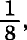而在18世纪初不变资本占，可变资本占，但是，目前一定量纺纱劳动在生产中所消费的原料、劳动资料等等的量却比18世纪初要多几百倍。原因很简单：随着劳动生产率的增长，不仅劳动所消费的生产资料的量增大了，而且生产资料的价值比生产资料的量相对地减小了。这样一来，生产资料的价值绝对地增长了，但不是同它的量按比例增长。因此，不变资本和可变资本之间的差额的增大，同不变资本转变成的生产资料的量和可变资本转变成的劳动力的量之间的差额的增大相比，要慢得多。随着后一个差额的增长，前一个差额也增长，但是增长的程度较小。
然而，积累的增进虽然使资本可变部分的相对量减少，但是决不因此排斥它的绝对量的增加。假定资本价值起初分为50%的不变资本和50%的可变资本，后来分为80%的不变资本和20%的可变资本。如果原有资本在此期间从例如6000镑增加到18000镑，那么，它的可变组成部分也要增加。这个可变部分原来是3000镑，现在是3600镑。但是，要使对劳动的需求提高20%，以前只需资本增加20%就够了，现在则要求原有资本增加为三倍。
在第四篇中已经指出，社会劳动生产力的发展怎样以大规模的协作为前提，怎样只有在这个前提下，才能组织劳动的分工和结合，才能使生产资料由于大规模积聚而得到节约，才能产生那些按其物质属性来说只适于共同使用的劳动资料，如机器体系等等，才能使巨大的自然力为生产服务，才能使生产过程转化为科学在工艺上的应用(14)。在商品生产中，生产资料归私人所有，因而劳动者或者单独地、独立地生产商品，或者由于缺乏自行经营的资料而把自己的劳动力当作商品来出卖；在这种生产的基础上，上述的前提只有通过单个资本的增长来实现，或者说，随着社会生产资料和生活资料转化为资本家的私有财产来实现。商品生产的基础只有在资本主义的形式上才能担负起大规模的生产。所以，单个商品生产者手中一定程度的资本积累，是特殊的资本主义的生产方式的前提。因此，在从手工业到资本主义生产的过渡中，我们必须假定已经有这种积累(15)。这种积累可以叫作原始积累，因为它不是特殊的资本主义的生产的历史结果，而是这种生产的历史基础。这种积累本身是怎样发生的，我们还用不着在这里研究。只要知道它是起点就行了。但是，一切在这个基础上生长起来的提高社会劳动生产力的方法，同时也就是提高剩余价值或剩余产品的生产的方法，而剩余价值或剩余产品又是积累的形成要素。因此，这些方法同时也就是资本生产资本或资本加速积累的方法。剩余价值不断再转化为资本，表现为进入生产过程的资本量的不断增长。这种增长又成为一种扩大的生产规模以及随之出现的提高劳动生产力和加速剩余价值生产的方法的基础。可见，一定程度的资本积累表现为特殊的资本主义的生产方式的条件，而特殊的资本主义的生产方式又反过来引起资本的加速积累。因此，特殊的资本主义的生产方式随着资本积累而发展，资本积累又随着特殊的资本主义的生产方式而发展。这两种经济因素由于这种互相推动的复合关系，引起资本技术构成的变化，从而使资本的可变组成部分同不变组成部分相比越来越小。
每一单个资本都是生产资料的或大或小的积聚，并且相应地指挥着一支或大或小的劳动军。每一个积累都成为新的积累的手段。这种积累随着执行资本职能的财富数量的增多而扩大这种财富在单个资本家手中的积聚，从而扩大大规模生产和特殊的资本主义的生产方法的基础。社会资本的增长是通过许多单个资本的增长来实现的。假定其他一切条件不变，各单个资本，以及与之相联的生产资料的积聚，会按照它们各自在社会总资本中所占份额的比例而增长。同时，从原资本上会分出枝杈来，作为新的独立资本执行职能。在这方面，资本家家庭内部的分产起着重大作用。因此，随着资本的积累，资本家的人数也多少有所增加。这种直接以积累为基础的或不如说和积累等同的积聚，有两个特征。第一，在其他条件不变的情况下，社会生产资料在单个资本家手中积聚的增进，受社会财富增长程度的限制。第二，社会资本中固定在每个特殊生产部门的部分，分在许多资本家身上，他们作为独立的和互相竞争的商品生产者彼此对立着。所以，积累和伴随积累的积聚不仅分散在许多点上，而且执行职能的资本的增长还同新资本的形成和旧资本的分裂交错在一起。因此，积累一方面表现为生产资料和对劳动的支配权的不断增长的积聚，另一方面，表现为许多单个资本的互相排斥。
社会总资本这样分散为许多单个资本，或它的各部分间的互相排斥，又遇到各部分间的互相吸引的反作用。这已不再是生产资料和对劳动的支配权的简单的、和积累等同的积聚。这是已经形成的各资本的积聚，是它们的个体独立性的消灭，是资本家剥夺资本家，是许多小资本转化为少数大资本。这一过程和前一过程不同的地方就在于，它仅仅以已经存在的并且执行职能的资本在分配上的变化为前提，因而，它的作用范围不受社会财富的绝对增长或积累的绝对界限的限制。资本所以能在这里，在一个人手中膨胀成很大的量，是因为它在那里，在许多人手中丧失了。这是不同于积累和积聚的本来意义的集中。
资本的这种集中或资本吸引资本的规律，不可能在这里加以阐述。简单地提一些事实就够了。竞争斗争是通过使商品便宜来进行的。在其他条件不变时，商品的便宜取决于劳动生产率，而劳动生产率又取决于生产规模。因此，较大的资本战胜较小的资本。其次，我们记得，随着资本主义生产方式的发展，在正常条件下经营某种行业所需要的单个资本的最低限量提高了。因此，较小的资本挤到那些大工业还只是零散地或不完全地占领的生产领域中去。在那里，竞争的激烈程度同互相竞争的资本的多少成正比，同互相竞争的资本的大小成反比。竞争的结果总是许多较小的资本家垮台，他们的资本一部分转入胜利者手中，一部分归于消灭。除此而外，一种崭新的力量——信用事业，随同资本主义的生产而形成起来。起初，它作为积累的小小的助手不声不响地挤了进来，通过一根根无形的线把那些分散在社会表面上的大大小小的货币资金吸引到单个的或联合的资本家手中；但是很快它就成了竞争斗争中的一个新的可怕的武器；最后，它转化为一个实现资本集中的庞大的社会机构。
随着资本主义生产和积累的发展，竞争和信用——集中的两个最强有力的杠杆，也以同样的程度发展起来。同时，积累的增进又使可以集中的材料即单个资本增加，而资本主义生产的扩大，又替那些要有资本的预先集中才能建立起来的强大工业企业，一方面创造了社会需要，另一方面创造了技术手段。因此，现在单个资本的互相吸引力和集中的趋势比以往任何时候都更加强烈。虽然集中运动的相对广度和强度在一定程度上由资本主义财富已经达到的数量和经济机构的优越程度来决定，但是集中的进展决不取决于社会资本的实际增长量。这正是集中与积聚——它不过是规模扩大的再生产的另一种表现——特别不同的地方。集中可以通过单纯改变既有资本的分配，通过单纯改变社会资本各组成部分的量的组合来实现。资本所以能在这里，在一个人手中增长成巨大的量，是因为它在那里，在许多单个人的手中被夺走了。在一个生产部门中，如果投入的全部资本已溶合为一个单个资本时，集中便达到了极限。(16)在一个社会里，只有当社会总资本或者合并在惟一的资本家手中，或者合并在惟一的资本家公司手中的时候，集中才算达到极限。
集中补充了积累的作用，使工业资本家能够扩大自己的经营规模。不论经营规模的扩大是积累的结果，还是集中的结果；不论集中是通过吞并这条强制的途径来实现，——在这种场合，某些资本成为对其他资本的占压倒优势的引力中心，打破其他资本的个体内聚力，然后把各个零散的碎片吸引到自己方面来，——还是通过建立股份公司这一比较平滑的办法把许多已经形成或正在形成的资本溶合起来，经济作用总是一样的。工业企业规模的扩大，对于更广泛地组织许多人的总体劳动，对于更广泛地发展这种劳动的物质动力，也就是说，对于使分散的、按习惯进行的生产过程不断地变成社会结合的、用科学处理的生产过程来说，到处都成为起点。
不过很明显，积累，即由圆形运动变为螺旋形运动的再生产所引起的资本的逐渐增大，同仅仅要求改变社会资本各组成部分的量的组合的集中比较起来，是一个极缓慢的过程。假如必须等待积累使某些单个资本增长到能够修建铁路的程度，那么恐怕直到今天世界上还没有铁路。但是，集中通过股份公司转瞬之间就把这件事完成了。集中在这样加强和加速积累作用的同时，又扩大和加速资本技术构成的变革，即减少资本的可变部分来增加它的不变部分，从而减少对劳动的相对需求。
通过集中而在一夜之间集合起来的资本量，同其他资本量一样，不断再生产和增大，只是速度更快，从而成为社会积累的新的强有力的杠杆。因此，当人们谈到社会积累的增进时，今天已经默默地把集中的作用包括在内。
在正常的积累进程中形成的追加资本（见第22章第1节），主要是充当利用新发明和新发现的手段，总之，是充当利用工业改良的手段。但是，随着时间的推移，旧资本总有一天也会从头到尾地更新，会脱皮，并且同样会以技术上更加完善的形态再生出来，在这种形态下，用较少量的劳动就足以推动较多量的机器和原料。由此必然引起对劳动需求的绝对减少，不言而喻，经历这种更新过程的资本越是由于集中运动而大量聚集，对劳动需求的绝对减少也就越厉害。
可见，一方面，在积累进程中形成的追加资本，同它自己的量比较起来，会越来越少地吸引工人。另一方面，周期地按新的构成再生产出来的旧资本，会越来越多地排斥它以前所雇用的工人。
3.相对过剩人口或产业后备军的累进生产
资本积累最初只是表现为资本的量的扩大，但是以上我们看到，它是通过资本构成不断发生质的变化，通过减少资本的可变组成部分来不断增加资本的不变组成部分而实现的。(17) (18)
特殊的资本主义的生产方式，与之相适应的劳动生产力的发展以及由此引起的资本有机构成的变化，不只是同积累的增进或社会财富的增长保持一致的步伐。它们的进展要快得多，因为简单的积累即总资本的绝对扩大，伴随有总资本的各个分子的集中，追加资本的技术变革，也伴随有原资本的技术变革。因此，随着积累的进程，资本的不变部分和可变部分的比例会发生变化；假定原来是1∶1，后来会变成2∶1、3∶1、4∶1、5∶1、7∶1等等，因而随着资本的增长，资本总价值转变为劳动力的部分不是，而是递减为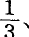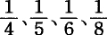等等，转变为生产资料的部分则递增为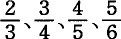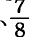等等。因为对劳动的需求，不是由总资本的大小决定的，而是由总资本可变组成部分的大小决定的，所以它随着总资本的增长而递减，而不像以前假定的那样，随着总资本的增长而按比例增加。对劳动的需求，同总资本量相比相对地减少，并且随着总资本量的增长以递增的速度减少。诚然，随着总资本的增长，总资本的可变组成部分即并入总资本的劳动力也会增加，但是增加的比例越来越小。积累作为生产在一定技术基础上的单纯扩大而发生作用的那种间歇时间缩短了。为了吸收一定数目的追加工人，甚至为了在旧资本不断发生形态变化的情况下继续雇用已经在职的工人，就不仅要求总资本以不断递增的速度加快积累。而且，这种不断增长的积累和集中本身，又成为使资本构成发生新的变化的一个源泉，也就是成为使资本的可变组成部分和不变组成部分相比再次迅速减少的一个源泉。总资本的可变组成部分的相对减少随着总资本的增长而加快，而且比总资本本身的增长还要快这一事实，在另一方面却相反地表现为，好像工人人口的绝对增长总是比可变资本即工人人口的就业手段增长得快。事实是，资本主义积累不断地并且同它的能力和规模成比例地生产出相对的，即超过资本增殖的平均需要的，因而是过剩的或追加的工人人口。
就社会总资本来考察，时而它的积累运动引起周期的变化，时而这个运动的各个因素同时分布在各个不同的生产部门。在某些部门，由于单纯的积聚(19)，资本的构成发生变化而资本的绝对量没有增长；在有些部门，资本的绝对增长同它的可变组成部分或它所吸收的劳动力的绝对减少结合在一起；在另一些部门，资本时而在一定的技术基础上持续增长，并按照它增长的比例吸引追加的劳动力，时而发生有机的变化，资本的可变组成部分缩小；在一切部门中，资本可变部分的增长，从而就业工人人数的增长，总是同过剩人口的激烈波动，同过剩人口的暂时产生结合在一起，而不管这种产生采取排斥就业工人这个较明显的形式，还是采取使追加的工人人口难于被吸入它的通常水道这个不大明显但作用相同的形式。(20)随着已经执行职能的社会资本量的增长及其增长程度的提高，随着生产规模和所使用的工人人数的扩大，随着他们劳动的生产力的发展，随着财富的一切源流的更加广阔和更加充足，资本对工人的更大的吸引力和更大的排斥力互相结合的规模也不断扩大，资本有机构成和资本技术形式的变化速度也不断加快，那些时而同时地时而交替地被卷入这些变化的生产部门的范围也不断增大。因此，工人人口本身在生产出资本积累的同时，也以日益扩大的规模生产出使他们自身成为相对过剩人口的手段。(21)这就是资本主义生产方式所特有的人口规律，事实上，每一种特殊的、历史的生产方式都有其特殊的、历史地发生作用的人口规律。抽象的人口规律只存在于历史上还没有受过人干涉的动植物界。
过剩的工人人口是积累或资本主义基础上的财富发展的必然产物，但是这种过剩人口反过来又成为资本主义积累的杠杆，甚至成为资本主义生产方式存在的—个条件。过剩的工人人口形成一支可供支配的产业后备军，它绝对地从属于资本，就好像它是由资本出钱养大的一样。过剩的工人人口不受人口实际增长的限制，为不断变化的资本增殖需要创造出随时可供剥削的人身材料。随着积累和伴随积累而来的劳动生产力的发展，资本的突然膨胀力也增长了，这不仅是因为执行职能的资本的弹性和绝对财富——资本不过是其中一个有弹性的部分——增长了，也不仅是因为信用每当遇到特殊刺激会在转眼之间把这种财富的非常大的部分作为追加资本交给生产支配。这还因为生产过程本身的技术条件，机器、运输工具等等，有可能以最大的规模最迅速地把剩余产品转化为追加的生产资料。随着积累的增进而膨胀起来的并且可以转化为追加资本的大量社会财富，疯狂地涌入那些市场突然扩大的旧生产部门，或涌入那些由旧生产部门的发展而引起需要的新兴生产部门，如铁路等等。在所有这些场合，都必须有大批的人可以突然地被投到决定性的地方去，而又不致影响其他部门的生产规模。这些人就由过剩人口来提供。现代工业特有的生活过程，由中常活跃、生产高度繁忙、危机和停滞这几个时期构成的、穿插着较小波动的十年一次的周期形式，就是建立在产业后备军或过剩人口的不断形成、或多或少地被吸收、然后再形成这样的基础之上的。而工业周期的阶段变换又使过剩人口得到新的补充，并且成为过剩人口再生产的最有力的因素之一。
现代工业这种独特的生活过程，我们在人类过去的任何时代都是看不到的，即使在资本主义生产的幼年时期也不可能出现。那时资本构成的变化还极其缓慢。因此，对劳动的需求的增长，总的说来是同资本的积累相适应的。不管那时资本积累的增进同现代相比是多么缓慢，它还是碰到了可供剥削的工人人口的自然限制，这些限制只有通过以后将要谈到的暴力手段才能清除。生产规模突然的跳跃式的膨胀是它突然收缩的前提；而后者又引起前者，但是没有可供支配的人身材料，没有不取决于人口绝对增长的工人的增加，前者是不可能的。工人的这种增加，是通过使一部分工人不断地被“游离”出来的简单过程，通过使就业工人人数比扩大的生产相对减少的方法造成的。因此，现代工业的整个运动形式来源于一部分工人人口不断地转化为失业的或半失业的人手。政治经济学的肤浅性也表现在，它把信用的膨胀和收缩，把工业周期各个时期更替的这种单纯的征状，看作是造成这种更替的原因。正如天体一经投入一定的运动就会不断地重复这种运动一样，社会生产一经进入交替发生膨胀和收缩的运动，也会不断地重复这种运动。而结果又会成为原因，于是不断地再生产出自身条件的整个过程的阶段变换就采取周期性的形式。这种周期性一经固定下来，那么，就连政治经济学也会把相对的，即超过资本增殖的平均需要的过剩人口的生产，看作是现代工业的生活条件。
曾任牛津大学政治经济学教授、后来又任英国殖民部官员的赫·梅里韦尔说：
“假定在危机时期国家竭力通过向国外移民的办法来摆脱几十万过剩的贫民，那结果会怎样呢？结果是，当对劳动的需求刚一恢复时，劳动就会不足。人的再生产不管多么快，要把成年工人补充起来，总需要有一代人的时间。可是我们的工厂主的利润主要取决于是否有能力利用需求活跃的有利时机，并以此来弥补滞销时期的损失。而他们只有拥有对机器和体力劳动的指挥权，才能保证有这种能力。他们必须找到可供支配的人手；他们必须能够依据市场情况在必要时加强或收缩他们的营业活动，否则他们就决不能在竞争的角逐中保持优势，而这种优势是国家财富的基础。”(22)
甚至马尔萨斯也承认过剩人口对于现代工业来说是必要的，虽然他按照自己的褊狭之见，把它解释成工人人口的绝对过剩，而不是工人人口的相对过剩。他说：
“在一个主要依靠工商业的国家里，如果在工人阶级中间盛行慎重地对待结婚的习惯，那对国家是有害的……按人口的性质来说，即使遇到特殊需求，不经过16年或18年的时间，也不可能向市场供应追加工人。然而，收入通过节约转化为资本却可以快得多；一个国家的劳动基金比人口增长得快的情况，是经常有的。”(23)
政治经济学这样把工人的相对过剩人口的不断生产宣布为资本主义积累的必要条件之后，就恰如其分地以一个老处女的姿态，通过她的“最理想的人”即资本家的嘴，对那些因自己创造了追加资本而被抛向街头的“过剩的人”说了如下的话：
“我们工厂主增大你们必须借以生存的资本，为你们做了我们所能做的事情；而你们必须去做其余的事情，去使你们的人数同生存资料相适应。”(24)
对资本主义生产来说，人口自然增长所提供的可供支配的劳动力数量是绝对不够的。为了能够自由地活动，它需要有一支不以这种自然限制为转移的产业后备军。
以上我们假定，就业工人人数的增减正好同可变资本的增减相一致。
然而，可变资本在它所指挥的工人人数不变或甚至减少的情况下也会增长。如果单个工人提供更多的劳动，因而他的工资增加，——即使劳动价格不变，或者甚至下降，但只要下降得比劳动量的增加慢，——情况就是如此。在这种场合，可变资本的增长是劳动增加的指数，而不是就业工人增加的指数。每一个资本家的绝对利益在于，从较少的工人身上而不是用同样低廉或甚至更为低廉的花费从较多的工人身上榨取一定量的劳动。在后一种情况下，不变资本的支出会随着所推动的劳动量成比例地增长，在前一种情况下，不变资本的增长则要慢得多。生产规模越大，这种动机就越具有决定意义。它的力量随资本积累一同增长。
我们已经知道，资本主义生产方式和劳动生产力的发展——既是积累的原因，又是积累的结果——使资本家能够通过从外延方面或内涵方面加强对单个劳动力的剥削，在支出同样多的可变资本的情况下推动更多的劳动(25)。其次，我们还知道，资本家越来越用不大熟练的工人排挤较熟练的工人，用未成熟的劳动力排挤成熟的劳动力，用女劳动力排挤男劳动力，用少年或儿童劳动力排挤成年劳动力，这样，他就用同样多的资本价值买到更多的劳动力(26)。
所以，在积累的进程中，一方面，较大的可变资本无须招收更多的工人就可以推动更多的劳动；另一方面，同样数量的可变资本用同样数量的劳动力就可以推动更多的劳动；最后，通过排挤较高级的劳动力可以推动更多较低级的劳动力。
因此，相对过剩人口的生产或工人的游离，比生产过程随着积累的增进而加速的技术变革，比与此相适应的资本可变部分比不变部分的相对减少，更为迅速。如果说生产资料在扩大规模和作用的同时，在越来越小的程度上成为工人的就业手段，那么，这种情况本身又会由于下述事实而有所变化：劳动生产力越是增长，资本造成的劳动供给比资本对工人的需求越是增加得快。工人阶级中就业部分的过度劳动，扩大了它的后备军的队伍，而后者通过竞争加在就业工人身上的增大的压力，又反过来迫使就业工人不得不从事过度劳动和听从资本的摆布。工人阶级的一部分从事过度劳动迫使它的另一部分无事可做，反过来，它的一部分无事可做迫使它的另一部分从事过度劳动，这成了各个资本家致富的手段(27)，同时又按照与社会积累的增进相适应的规模加速了产业后备军的生产。这个因素在相对过剩人口的形成上是多么重要，可以拿英国的例子来证明。英国“节约”劳动的技术手段是十分强大的。但是，如果明天把劳动普遍限制在合理的程度，并且在工人阶级的各个阶层中再按年龄和性别进行适当安排，那么，要依照现有的规模继续进行国民生产，目前的工人人口是绝对不够的。目前“非生产”工人的大多数都不得不转化为“生产”工人。
大体说来，工资的一般变动仅仅由同工业周期各个时期的更替相适应的产业后备军的膨胀和收缩来调节。因此，决定工资的一般变动的，不是工人人口绝对数量的变动，而是工人阶级分为现役军和后备军的比例的变动，是过剩人口相对量的增减，是过剩人口时而被吸收、时而又被游离的程度。现代工业具有十年一次的周期，每次周期又有各个周期性的阶段，而且这些阶段在积累进程中被越来越频繁地相继发生的不规则的波动所打断。对于这个现代工业来说，如果有下面这样的规律，那确实是太好了：劳动的供求不是通过资本的膨胀和收缩，因而不是按照资本当时的增殖需要来调节，以致劳动市场忽而由于资本膨胀而显得相对不足，忽而由于资本收缩而显得过剩，而是相反，资本的运动依存于人口量的绝对运动。然而，这正是经济学的教条。按照这个教条，工资因资本的积累而提高。工资的提高刺激工人人口更快地增加，这种增加一直持续到劳动市场充斥，因而资本同工人的供给比较起来相对不足时为止。工资下降，于是事情走向反面。由于工资的下降，工人人口逐渐减少，以致资本同工人人口比较起来又相对过剩，或者像另一些人所说的那样，工资的降低和对工人剥削的相应提高，会使积累重新加快，而与此同时，低工资又会抑制工人阶级的增长。这样一来，就又出现劳动的供给小于劳动的需求、工资提高等等情况。这对于发达的资本主义生产是一个多么美好的运动方法啊！可是，在真正有劳动能力的人口因工资提高而可能出现某种实际增长以前，已经一再经过了这样一个时期，在这个时期必然发生工业战，展开厮杀，并且决出胜负。
1849年至1859年间，在谷物价格下降的同时，英国农业地区出现了实际考察起来只是名义上的工资提高。例如，周工资在威尔特郡由7先令提高到8先令，在多塞特郡由7先令或8先令提高到9先令，等等。这是农业过剩人口异乎寻常外流的结果，而这种外流是由战争[436]造成的需求和铁路工程、工厂、矿山等部门的大规模扩展引起的。工资越低，它的任何提高，即使是微不足道的提高，在百分比上也表现得越高。例如，周工资是20先令，提高到22先令，就是提高10%；但如果周工资只有7先令，提高到9先令，那就是提高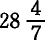%，这听起来就相当可观了。不管怎样，租地农场主大喊大叫起来，甚至伦敦《经济学家》在谈到这些饥饿工资时，也郑重其事地胡诌什么有了“普遍的和重大的提高”(28)。租地农场主该怎么办呢？难道他们会像教条的经济学的头脑所设想的那样，等待这种优厚的报酬促使农业工人增加，直到他们的工资不得不重新下降吗？不，租地农场主采用了更多的机器，工人转瞬间又“过剩”到连租地农场主也感到满意的程度。同以前相比，现在投入农业的“资本更多了”，并且采取了生产效率更高的形式。这样一来，对劳动的需求不仅相对地下降，而且绝对地下降了。
经济学的上述虚构，把调节工资的一般变动或调节工人阶级即总劳动力和社会总资本之间的关系的规律，同在各个特殊生产部门之间分配工人人口的规律混为一谈了。例如，由于市场情况良好，某一生产部门的积累特别活跃，利润高于平均利润，追加资本纷纷涌来，这样，对劳动的需求和工资自然就会提高。较高的工资把较大一部分工人人口吸引到这个有利的部门，直到这里劳动力达到饱和，工资终于又下降到以前的平均水平，如果工人流入过多，甚至会降到这个水平以下。那时工人流入该生产部门的现象不仅停止，甚至还会发生流出现象。在这里，政治经济学家就以为看到了，随着工资的提高，工人人数“在何处以及如何”绝对增长，而随着工人人数的绝对增长，工资“在何处以及如何”下降；但是事实上，他所看到的，只是某一特殊生产部门的劳动市场的局部波动，他所看到的，只是工人人口按照资本的需要的变动而在各投资部门之间的分配。
产业后备军在停滞和中等繁荣时期加压力于现役劳动军，在生产过剩和亢进时期又抑制现役劳动军的要求。所以，相对过剩人口是劳动供求规律借以运动的背景。它把这个规律的作用范围限制在绝对符合资本的剥削欲和统治欲的界限之内。这里正好应该回过来谈一下经济学辩护论的一大业绩。我们记得，由于采用新机器或扩大旧机器，一部分可变资本转化为不变资本，这是“束缚”资本并从而“游离”工人的活动，而经济学辩护士却相反地把这种活动说成是为工人游离资本(29)。只有到现在我们才能充分地评价辩护士的厚颜无耻。其实，被游离出来的，不仅有直接被机器排挤的工人，而且还有他们的代替者和企业在原有基础上实行一般扩大时通常会吸收的追加人员。现在他们全被“游离”出来，并且每一笔希望执行职能的新资本都能支配他们。不管这种资本吸引的是这些工人，还是另一些工人，只要这笔资本刚好足以从市场上雇走被机器抛到市场上的那么多工人，那么对劳动的总需求的影响就等于零。如果它雇用的人数较少，过剩的人数就会增加；如果它雇用的人数较多，劳动总需求增加的幅度也只不过等于就业的人超过“被游离的人”的那个差额。可见，寻求投资场所的追加资本本来会激起的劳动总需求的增加，在以上每一种场合都会按照工人被机器抛向街头的程度而抵消。因此，这也就是说，资本主义生产的机制安排好，不让资本的绝对增长伴有劳动总需求的相应增加。而辩护士就把这叫作对于被排挤的工人在被抛入产业后备军的过渡时期中遭受贫困、痛苦和可能死亡的一种补偿！对劳动的需求同资本的增长并不是一回事，劳动的供给同工人阶级的增长也不是一回事，所以，这里不是两种彼此独立的力量互相影响。骰子是假的。资本在两方面同时起作用。它的积累一方面扩大对劳动的需求，另一方面又通过“游离”工人来扩大工人的供给，与此同时，失业工人的压力又迫使就业工人付出更多的劳动，从而在一定程度上使劳动的供给不依赖于工人的供给。劳动供求规律在这个基础上的运动成全了资本的专制。因此，一旦工人识破秘密，知道了他们为什么劳动越多，为他人生产的财富越多，他们的劳动生产力越是提高，他们连充当资本增殖手段的职能对他们来说也就越是没有保障；一旦工人发现，他们本身之间竞争的激烈程度完全取决于相对过剩人口的压力；一旦工人因此试图通过工联等等在就业工人和失业工人之间组织有计划的合作，来消除或削弱资本主义生产的那种自然规律对他们这个阶级所造成的毁灭性的后果，这时，资本和它的献媚者政治经济学家就大吵大叫起来，说这是违反了“永恒的”和所谓“神圣的”供求规律。也就是说，就业工人和失业工人之间的任何联合都会破坏这个规律的“纯粹的”作用。另一方面，例如在殖民地，一旦有不利的情况妨碍建立产业后备军，从而妨碍工人阶级绝对地隶属于资本家阶级，资本就同它的庸俗的桑乔·潘萨一道起来反叛“神圣的”供求规律，并企图用强制手段来阻碍它发挥作用。
4.相对过剩人口的各种存在形式。资本主义积累的一般规律
相对过剩人口是形形色色的。每个工人在半失业或全失业的时期，都属于相对过剩人口。工业周期阶段的更替使相对过剩人口具有显著的、周期反复的形式，因此，相对过剩人口时而在危机时期急剧地表现出来，时而在营业呆滞时期缓慢地表现出来。如果撇开这些形式不说，那么，过剩人口经常具有三种形式：流动的形式、潜在的形式和停滞的形式。
在现代工业的中心——工厂、制造厂、冶金厂、矿山等等，工人时而被排斥，时而在更大的规模上再被吸引，因此总的说来，就业人数是增加的，虽然增加的比率同生产规模相比不断缩小。在这里，过剩人口处于流动的形式。
无论在真正的工厂中，还是在一切有机器作为因素加入或者甚至仅仅实行现代分工的大工场中，都需要大量的还没有脱离少年期的男工。少年期一过，便只剩下极少数的人能够被原生产部门继续雇用，而大多数的人通常要被解雇。他们成了流动过剩人口的一个要素，这个要素随着工业规模的扩大而增大。其中一部分人移居国外，其实不过是跟着外流的资本流出去。由此造成的后果之一，是女性人口比男性人口增长得快，英格兰就是一个例子。工人数量的自然增长不能满足资本积累的需要，但同时又超过这种需要，这是资本运动本身的一个矛盾。资本需要的少年工人数量较大，成年工人数量较小。比这个矛盾更引人注目的是另一个矛盾：在成千上万的人手流落街头的同时，有人却抱怨人手不足，因为分工把人手束缚在一定的生产部门了。(30)此外，资本消费劳动力是如此迅速，以致工人到了中年通常就已经多少衰老了。他落入过剩者的队伍，或者从较高的等级被排挤到较低的等级。我们看到，正是大工业中的工人寿命最短。
“曼彻斯特保健医官利医生证实，该市富裕阶级的平均寿命是38岁，而工人阶级的平均寿命只有17岁。在利物浦，前者是35岁，后者是15岁。可见，特权阶级的寿命比他们的不那么幸运的同胞的寿命要长一倍以上。”(31)
在这种情况下，这部分无产阶级的绝对增长就需要采取这样一种形式：它的成员迅速耗损，但是它的人数不断增大。这样就需要工人一代一代地迅速更替。（这个规律对人口中的其他阶级是不适用的。）这种社会需要，是通过早婚这一大工业工人生活条件的必然后果，并通过剥削工人子女以奖励工人生育子女的办法来满足的。
资本主义生产一旦占领农业，或者依照它占领农业的程度，对农业工人人口的需求就随着在农业中执行职能的资本的积累而绝对地减少，而且对人口的这种排斥不像在非农业的产业中那样，会由于更大规模的吸引而得到补偿。因此，一部分农村人口经常准备着转入城市无产阶级或制造业无产阶级的队伍，经常等待着有利于这种转化的条件。（这里所说的制造业是指一切非农业的产业。）(32)因此，相对过剩人口的这一源泉是长流不息的。但是，它不断地流向城市是以农村本身有经常潜在的过剩人口为前提的，这种过剩人口的数量只有在排水渠开放得特别大的时候才能看得到。因此，农业工人的工资被压到最低限度，他总是有一只脚陷在需要救济的赤贫的泥潭里。
第三类相对过剩人口，停滞的过剩人口，形成现役劳动军的一部分，但是就业极不规则。因此，它为资本提供了一个贮存着可供支配的劳动力的取之不竭的蓄水池。这种劳动力的生活状况降到了工人阶级的平均正常水平以下，正是这种情况使它成为资本的特殊剥削部门的广泛基础。它的特点是劳动时间最长而工资最低。它的主要形式，我们在家庭劳动一节中已经看到了(33) 。它不断地从大工业和农业的过剩者那里得到补充，特别是从那些由于手工业生产被工场手工业生产打垮，或者工场手工业生产被机器生产打垮而没落的工业部门那里得到补充。它的数量随着由积累的规模和能力的增大造成的“过剩”工人的增长而增加。但是，它同时又是工人阶级中一个会自行再生产和繁衍不息的要素，它在工人阶级的增长总额中所占的比重大于其他要素。实际上，不仅出生和死亡的数量，而且家庭人口的绝对量都同工资的水平，即各类工人所支配的生活资料量成反比。资本主义社会的这个规律，在野蛮人中间，或者甚至在文明的移民中间，听起来会是荒谬的。它使人想起各种个体软弱的、经常受到追捕的动物的大量再生产。(34)
最后，相对过剩人口的最底层陷于需要救济的赤贫的境地。撇开流浪者、罪犯和妓女，一句话，撇开真正的流氓无产阶级不说，这个社会阶层由三类人组成。第一类是有劳动能力的人。只要粗略地浏览一下英格兰需要救济的贫民的统计数字，就会发现，他们的人数每当危机发生时就增大，每当营业复苏时就减少。第二类是孤儿和需要救济的贫民的子女。他们是产业后备军的候补者，在高度繁荣时期，如在1860年，他们迅速地大量地被卷入现役劳动军的队伍(35)。第三类是衰败的、流落街头的、没有劳动能力的人。属于这一类的，主要是因分工而失去灵活性以致被淘汰的人，还有超过工人正常年龄的人，最后还有随着带有危险性的机器、采矿业、化学工厂等等的发展而人数日益增多的工业牺牲者，如残疾人、病人、寡妇等等。需要救济的赤贫形成现役劳动军的残疾院和产业后备军的死荷重(36)。它的生产包含在相对过剩人口的生产中，它的必然性包含在相对过剩人口的必然性中，它和相对过剩人口一起，形成财富的资本主义生产和发展的一个存在条件。它是资本主义生产的一项非生产费用，但是，资本知道怎样把这项费用的大部分从自己的肩上转嫁到工人阶级和中等阶级下层的肩上。
社会的财富即执行职能的资本越大，它的增长的规模和能力越大，从而无产阶级的绝对数量和他们的劳动生产力越大，产业后备军也就越大。可供支配的劳动力同资本的膨胀力一样，是由同一些原因发展起来的。因此，产业后备军的相对量和财富的力量一同增长。但是同现役劳动军相比，这种后备军越大，常备的过剩人口也就越多，他们的贫困同他们所受的劳动折磨成反比(37)。最后，工人阶级中贫苦阶层和产业后备军越大，官方认为需要救济的贫民也就越多。这就是资本主义积累的绝对的、一般的规律。像其他一切规律一样，这个规律的实现也会由于各种各样的情况而有所变化，不过对这些情况的分析不属于这里的范围。
当经济学的智者们向工人说教，要工人使自己的人数去适应资本增殖的需要时，他们的愚蠢是很清楚的。资本主义生产和积累的机制在不断地使这个人数适应资本增殖的需要。这种适应的开头是创造出相对过剩人口或产业后备军，结尾是现役劳动军中不断增大的各阶层的贫困和需要救济的赤贫的死荷重。
由于社会劳动生产率的增进，花费越来越少的人力可以推动越来越多的生产资料，这个规律在不是工人使用劳动资料，而是劳动资料使用工人的资本主义的基础上表现为：劳动生产力越高，工人对他们就业手段的压力就越大，因而他们的生存条件，即为增加他人财富或为资本自行增殖而出卖自己的力气，也就越没有保障。因此，生产资料和劳动生产率比生产人口增长得快这一事实，在资本主义下却相反地表现为：工人人口总是比资本的增殖需要增长得快。
我们在第四篇分析相对剩余价值的生产时已经知道，在资本主义制度内部，一切提高社会劳动生产力的方法都是靠牺牲工人个人来实现的；一切发展生产的手段都转变为统治和剥削生产者的手段，都使工人畸形发展，成为局部的人，把工人贬低为机器的附属品，使工人受劳动的折磨，从而使劳动失去内容，并且随着科学作为独立的力量被并入劳动过程而使劳动过程的智力与工人相异化；这些手段使工人的劳动条件变得恶劣，使工人在劳动过程中屈服于最卑鄙的可恶的专制，把工人的生活时间转化为劳动时间，并且把工人的妻子儿女都抛到资本的札格纳特车轮下(38)。但是，一切生产剩余价值的方法同时就是积累的方法，而积累的每一次扩大又反过来成为发展这些方法的手段。由此可见，不管工人的报酬高低如何，工人的状况必然随着资本的积累而恶化。最后，使相对过剩人口或产业后备军同积累的规模和能力始终保持平衡的规律把工人钉在资本上，比赫斐斯塔司的楔子把普罗米修斯钉在岩石上钉得还要牢。这一规律制约着同资本积累相适应的贫困积累。因此，在一极是财富的积累，同时在另一极，即在把自己的产品作为资本来生产的阶级方面，是贫困、劳动折磨、受奴役、无知、粗野和道德堕落的积累。
政治经济学家们以各种不同的形式说出了资本主义积累的这种对抗性质(39)，虽然他们把它同资本主义以前的生产方式的那些尽管部分地相类似但本质上不同的现象混同起来。
18世纪的一位大经济学著作家、威尼斯的修道士奥特斯，把资本主义生产的对抗性理解为社会财富的普遍的自然规律。
“在一个国家里，经济上的善和经济上的恶总是保持平衡，一些人财富的充裕总是与另一些人财富的贫乏相抵。一些人享有巨大财富，同时总伴有更多得多的其他人被完全剥夺必需品。一个国家的财富同它的人口相适应，而它的贫困则同它的财富相适应。一些人勤劳迫使另一些人懒惰。穷人和懒惰者，是富人和勤奋者所造成的一个必然结果”等等。(40)
在奥特斯之后大约过了10年，高教会新教牧师唐森，曾十分露骨地颂扬贫困是财富的必要条件。
“用法律来强制劳动，会引起过多的麻烦、暴力和叫嚣，而饥饿不仅是和平的、无声的和持续不断的压力，而且是刺激勤勉和劳动的最自然的动力，会唤起最大的干劲。”
所以，一切问题都归结为怎样使工人阶级的饥饿永久化，而照唐森的看法，那个特别在穷人中起作用的人口原理已经把这件事安排好了。
“下面这一点似乎是一个自然规律：穷人在一定程度上是轻率的〈也就是说，他们是如此轻率，嘴里没有衔着金羹匙就降生到世界上来〉，所以，总是有一些人去担任社会上最卑微、最肮脏和最下贱的职务。于是，人类幸福基金大大增加，比较高雅的人们解除了烦劳，可以不受干扰地从事比较高尚的职业等等……济贫法有一种趋势，就是要破坏上帝和自然在世界上所创立的这个制度的和谐与优美、均称与秩序。”(41)
威尼斯的修道士从使贫困永久化的命运中，找到基督教的善行、终身不婚、修道院和慈善机关存在的理由，而这位新教的牧师却从其中找到借口，来诅咒使穷人有权享受少得可怜的社会救济的法律。施托尔希说：
“社会财富的增长产生出那个有用的社会阶级……它从事最单调、最下贱和最令人厌恶的职业，一句话，它把生活中一切不愉快的、受奴役的事情担在自己的肩上，从而使其他阶级有闲暇，有开阔的心境和传统的〈妙！〉高贵品性……”(42)
施托尔希问自己：这种伴随有群众贫困和堕落的资本主义文明，同野蛮相比究竟有什么优越性呢？他只找到一个答案：安全！西斯蒙第说：
“由于工业和科学的进步，每一个工人每天所能生产的东西比他自己消费所需要的东西多得多。但是，在他的劳动生产财富的同时，如果叫他自己去消费这个财富，那么这个财富就会使他不适宜于劳动了。”他认为，“如果人们〈即非工人〉必须像工人那样不倦地劳动才能获得技艺的一切改良和工业给我们带来的一切享受，那么他们大概会放弃这些东西……在今天，努力同它的报酬分开了；不是同一个人先劳动而后休息，相反地，正是因为一个人劳动，另一个人才休息……因此，劳动生产力的无限增长的结果，只能增加那些游手好闲的富人的奢侈和享受。”(43)
最后，冷血的资产阶级空论家德斯杜特·德·特拉西冷酷地声称：
“在贫国，人民是安乐的；在富国，人民通常是贫苦的。”(44)
5.资本主义积累一般规律的例证
（a）1846—1866年的英格兰
现代社会的任何一个时期，都不如最近20年这样有利于研究资本主义的积累。在这个时期，真好像是福尔土纳特的钱袋被发现了。不过，在所有国家中，英格兰又是一个典型的例子，因为它在世界市场上占据首位，因为资本主义生产方式只有在这里才得到了充分的发展，最后还因为，从1846年以来自由贸易的千年王国[439]的实现，又切断了庸俗政治经济学最后的退路。我们已经在第四篇里充分谈到了生产的巨大进步，由于这种进步，这20年中的后10年又远远超过了前10年。(45)
最近半世纪以来，英格兰人口的绝对增长虽然很大，但是它的相对增长或增长率却不断下降。引自官方人口调查的下列表格就可以证明。
英格兰和威尔士每十年中人口每年增长的百分率：
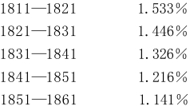
另一方面，现在我们再来看看财富的增长。在这里，应纳所得税的利润、地租等等的变动情况是最可靠的依据。1853—1864年，大不列颠应纳税的利润（不包括租地农场主的和若干其他项目的利润）增长50.47%（平均每年增长4.58%）(46)，而同时期人口约增长12%。1853—1864年，应纳税的地租（包括房屋、铁路、矿山、渔场等等的地租）增加38%，每年增加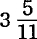%(47)，其中增加最快的是下列项目(48)：
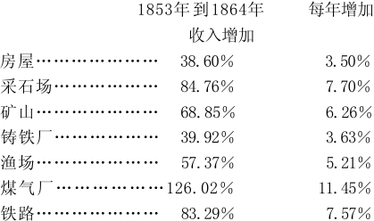
如果把1853—1864年这段时间以每四年为一期作一比较，就会看出，收入的增长程度是不断提高的。例如，利润的收入，1853—1857年期间每年增加1.73%，1857—1861年期间每年增加2.74%，1861—1864年期间每年增加9.30%。在联合王国，应纳所得税的收入总额，1856年为307068898镑，1859年为328127416镑，1862年为351745241镑，1863年为359142897镑，1864年为362462279镑，1865年为385530020镑。(49)
资本积累的同时伴随有资本的积聚和集中。虽然英格兰没有官方的农业统计材料（爱尔兰倒有），但是有10个郡自动提供了统计材料。根据这些统计材料可以看出：1851年到1861年，100英亩以下的租地农场从31583个减少到26567个，也就是说，有5016个合并于较大的租地农场了。(50)1815年到1825年，在应纳遗产税的动产中还没有一份超过100万镑的，但是从1825年到1855年，就有了8份，从1855年到1859年6月，也就是4年半的时间里，又有了4份。(51)简单地分析一下1864年和1865年的D项所得税（把租地农场主等等除外的利润），可以最明显地看出这种集中。首先应该指出，这种来源的收入达到60镑就要交纳所得税。在英格兰、威尔士和苏格兰，这种应纳税的收入1864年为95844222镑，1865年为105435787镑(52)，纳税的人数1864年在居民总数23891009人中是308416人，1865年在居民总数24127003人中是332431人。两年中这种收入的分配情况如下表：
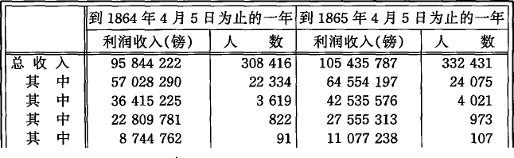
联合王国的煤产量，1855年为61453079吨，价值16113267镑，1864年为92787873吨，价值23197968镑；生铁产量，1855年为3218154吨，价值8045385镑，1864年为4767951吨，价值11919877镑。联合王国的营业铁路里程，1854年为8054英里，投入资本286068794镑，1864年为12789英里，投入资本425719613镑。联合王国的进出口总额，1854年为268210145镑，1865年为489923285镑。出口的变动情况如下表(53)：
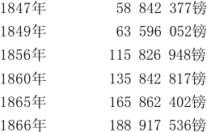
根据这些为数不多的材料，我们已经可以理解为什么不列颠国民中央注册局局长发出这样一种胜利的欢呼了：
“人口的增加固然迅速，但它赶不上工业和财富的增长。”(54)
现在让我们再来看看这种工业的直接代表，或这种财富的生产者，即工人阶级。格莱斯顿说：
“我国社会状况最令人感到忧虑的特点之一就是，国民的消费力在下降，工人阶级的困苦和贫穷在加剧，而与此同时，上层阶级的财富不断积累，资本不断增长。”(55)
这位假献殷勤的大臣1843年2月13日在下院是这样说的。过了20年，在1863年4月16日，他在预算演说中又说：
“从1842年到1852年，国内应纳税的收入增加了6%……在从1853年到1861年的8年内，如以1853年的收入为基础，这种收入则增加了20%。事实令人惊奇得几乎到了难以置信的程度……财富和实力这种令人陶醉的增长……完全限于有产阶级，但是……但是这种增长对工人居民也一定有间接的好处，因为它会降低日用消费品的价格，——富人虽然更富了，穷人至少也不那么穷了。不过我不敢断定穷的极端程度已经缩小。”(56)[440]
多么拙劣的诡辩！如果说工人阶级仍然“穷”，只是随着他们给有产阶级创造的“财富和实力的令人陶醉的增长”而变得“不那么穷”了，那也就是说，工人阶级相对地还是像原来一样穷。如果说穷的极端程度没有缩小，那么，穷的极端程度就增大了，因为富的极端程度已经增大。至于说到生活资料价格的降低，那么官方的统计材料，例如伦敦孤儿院的材料却表明，1860—1862年3年间的生活资料价格平均比1851—1853年3年间上涨了20%。在随后的1863—1865年3年中，肉、奶油、牛奶、糖、盐、煤以及其他许多必要的生活资料的价格又继续上涨了。(57)格莱斯顿在1864年4月7日所作的下一个预算演说，是一首对赚钱事业的进步和因“贫穷”而减色的国民幸福的平达式的赞歌。他谈到“处于需要救济的赤贫边缘”的群众，谈到“工资没有提高的”行业，最后，他用下面这样的话概括了工人阶级的幸福：
“人的生活十有八九都纯粹是为生存而挣扎。”(58)
不像格莱斯顿那样受官方考虑的约束的福塞特教授则直截了当地说：
“自然我并不否认，货币工资随着资本的这种增加〈最近几十年〉而有所提高，但是，由于许多生活必需品日益昂贵〈他认为这是由于贵金属贬值造成的〉，这种表面上的利益在很大程度上都丧失了……富人迅速地变得更富了，而工人阶级的生活却没有什么可以觉察得出来的改善……工人几乎成了小店主的奴隶，他们都是小店主的债务人。”(59)
在论述工作日和机器的那几篇里，我们揭示了不列颠工人阶级是在怎样的条件下为有产阶级创造了“财富和实力的令人陶醉的增长”。不过我们那时考察的，主要是执行社会职能时的工人。为了全面说明积累的规律，还必须注意工人在厂外的状况，他们营养和居住的状况。由于本书篇幅所限，我们在这里考察的主要是工业无产阶级和农业工人中报酬最微薄的部分，也就是工人阶级的大多数。
在这以前，我还要简单谈一谈官方认为需要救济的贫民，也就是工人阶级中丧失了出卖劳动力这个生存条件而靠社会施舍度日的那部分人。在英格兰(60)，官方认为需要救济的贫民的人数1855年是851369人，1856年是877767人，1865年是971433人。由于棉荒，1863年和1864年这种贫民的人数分别增加到1079382人和1014978人。1866年的危机使伦敦遭到了最沉重的打击，在这个居民比苏格兰王国还要多的世界市场中心，这种贫民的人数1866年比1865年增加了19.5%，比1864年增加了24.4%，而在1867年的头几个月比1866年增加得还多。在分析需要救济的贫民的统计数字时必须指出两点。一方面，这种贫民人数的增减运动反映着工业周期各阶段的变换。另一方面，随着资本的积累，阶级斗争日益发展，从而工人的觉悟日益提高，关于需要救济的贫民实际人数的官方统计也就越来越带有欺骗性。例如，最近两年来英国报刊（《泰晤士报》、《派尔-麦尔新闻》等）大声叫嚷的虐待需要救济的贫民的现象，是早就存在的。弗·恩格斯在1844年就叙述过完全相同的惨状和“追求轰动效应的作品”中完全相同的喧闹一时的伪善呼叫。[442]不过，最近10年伦敦饿死的人数惊人地增加了(61)，这无疑证明工人是更加憎恶贫民习艺所(62)这种贫民惩治所的奴役了。
（b）不列颠工业工人阶级中报酬微薄的阶层
现在我们来考察工业工人阶级中报酬微薄的阶层。1862年棉荒时期，枢密院委派斯密斯医生调查了兰开夏郡和柴郡的贫穷的棉纺织工人的营养状况。根据过去多年的观察，斯密斯曾得出过这样的结论：“为了避免饥饿病”，每个中常妇女一天的营养，最低限度必须包含3900格令碳素，180格令氮素，每个中常男子一天的营养，最低限度必须包含4300格令碳素，200格令氮素，这就是说，一个妇女需要的养料大致等于2磅上等小麦面包所含的养料，男子需要的还要多。成年男女平均每周最低限度需要28600格令碳素和1330格令氮素。他的计算在实际生活中惊人地得到了证实：他的计算同棉纺织工人消费的营养量被贫困压低到的可怜水平是相一致的。1862年12月，棉纺织工人每周得到的碳素是29211格令，氮素是1295格令。
1863年，枢密院下令调查英国工人阶级中营养最差的那部分人的贫困状况。枢密院医官西蒙医生选派了上述那位斯密斯医生担任这项工作。他的调查范围一方面包括农业工人，另一方面包括丝织工人、女缝工、皮手套工人、织袜工人、织手套工人和制鞋工人。后一方面的各类工人，除织袜工人外，全是城市工人。按照调查的惯例，选择的对象是每一类工人中最健康的和境况比较好的家庭。
调查得出的总的结论是：
“调查过的各类城市工人中，只有一类工人消费的氮素略微超过那个免于患饥饿病的绝对最低量；有两类工人氮素和碳素营养都不足，而其中一类相差很多；调查过的农业家庭中，有以上得到的碳素营养少于必要量，有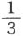以上得到的氮素营养少于必要量；有三个郡（伯克郡、牛津郡、萨默塞特郡）普遍缺乏最低限度的氮素营养。”(63)
在农业工人中，联合王国最富庶的地区英格兰的农业工人营养最差。(64)[444]农业工人中缺乏营养的主要又是妇女和儿童，因为“男人要去干活，总得吃饭”。在调查过的各类城市工人中，营养缺乏的程度更为严重。“他们的饮食非常坏，以致必然发生许多严重的有害健康的不足现象。”(65)（这一切都是资本家的“禁欲”！也就是连勉强口所必不可少的生活资料都进行禁欲而不付给他的工人！）
下表表示出，上述各类纯粹城市工人的营养状况同斯密斯医生假定的最低营养量，以及同棉纺织工人最贫困时期的营养状况的对比。(66)
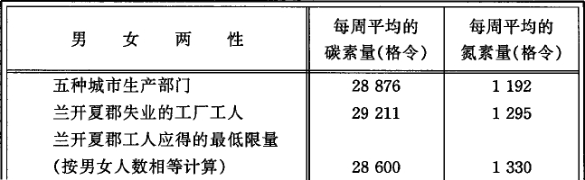
调查过的各类工业工人中，有半数即完全得不到啤酒，28%得不到牛奶。平均每周消费的流质食物量，最低的是女缝工的家庭，只有7盎司，最高的是织袜工人的家庭，有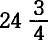盎司。完全得不到牛奶的人当中，大部分是伦敦的女缝工。每周消费的面包量，最低的是女缝工，只有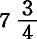磅，最高的是制鞋工人，有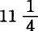磅，每个成年人每周消费的平均总量是9.9磅。糖（糖浆等等）每周的消费量，最低的是皮手套工人，只有4盎司，最高的是织袜工人，有11盎司；所有各类中每个成年人平均每周消费的总量是8盎司。每个成年人平均每周的奶油（脂肪等等）消费总量是5盎司。每个成年人平均每周的肉类（腊肉等等）消费量，最低是丝织工人，只有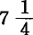盎司，最高是皮手套工人，有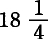盎司；各类工人每人消费的平均总量是13.6盎司。每个成年人每周的饮食费大致平均如下：丝织工人2先令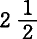便士，女缝工2先令7便士，皮手套工人2先令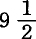便士，制鞋工人2先令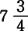便士，织袜工人2先令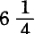便士。麦克尔斯菲尔德丝织工人的饮食费平均每周只有1先令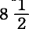便士。营养最差的是女缝工、丝织工人和皮手套工人。(67)
关于这种营养状况，西蒙医生在他的总的卫生报告中说：
“由于缺乏营养而引起疾病或者加重疾病的事例是举不胜举的，任何一个熟悉贫民医疗情况，或者熟悉医院的住院或门诊病人的人都可以证实这一点……但是，从卫生的观点看，这里还要加上另一个非常重要的情况……应该记住，缺乏饮食是极难忍受的，而饮食的严重缺乏通常总是跟随在其他方面的不足发生之后。远在缺乏营养成为卫生问题以前，远在生理学家想到计算决定生死的氮素和碳素的格令数以前，家庭生活中早已谈不上任何物质享受了。衣服和燃料比食物还缺。没有足够的抗寒能力；居住面积狭小到了引起疾病或者加重疾病的程度；家具器皿几乎一无所有；甚至保持整洁也成了过于破费和难于办到的事。如果出于自尊心想保持整洁，那么任何这样的尝试都会加重饥饿的痛苦。住的地方是在房屋最便宜的地区；是在卫生警察的工作收效最少，排水沟最坏，交通最差，环境最脏，水的供给最不充分最不清洁的地区，如果是在城市的话，阳光和空气也最缺乏。当穷到连饮食都感到缺乏时，也就必然要遭到这些威胁健康的灾祸。这些灾祸加在一起对生命固然是可怕的威胁，但仅仅缺乏饮食本身就已经够骇人的了……这使人产生痛苦的思考，特别是如果想到这里所说的贫困完全不是由于游手好闲而应得的贫困。这是工人的贫困。是的，说到城市工人，他们为了换取少量的食物，竟多半要使劳动延长到超出一切界限。然而，只有作极大的保留，才能说这种劳动可以使工人维持生活…… 在大多数场合，这种名义上的维持生活不过是一条或长或短的通向需要救济的赤贫的迂回道路而已。”(68)
最勤劳的工人阶层的饥饿痛苦和富人建立在资本主义积累基础上的粗野的或高雅的奢侈浪费之间的内在联系，只有当人们认识了经济规律时才能揭露出来。居住状况却不是这样。在这方面任何一个公正的观察者都能看到，生产资料越是大量集中，工人就相应地越要聚集在同一个空间，因此，资本主义的积累越迅速，工人的居住状况就越悲惨。随着财富的增长而实行的城市“改良”是通过下列方法进行的：拆除建筑低劣地区的房屋，建造供银行和百货商店等等用的高楼大厦，为交易往来和豪华马车而加宽街道，修建铁轨马车路等等；这种改良明目张胆地把贫民赶到越来越坏越来越挤的角落里去。另一方面，每个人都知道，房屋的昂贵和房屋的质量成反比，房屋投机分子开采贫困这个矿山比当年开采波托西矿山[445]赚钱多，花钱少。在这里，资本主义积累的对抗性质从而整个资本主义财产关系的对抗性质(69)，表现得如此明显，就连英国官方关于这个问题的报告也都充满了对“财产和财产权”的异端攻击。随着工业的发展、资本的积累、城市的扩展和“美化”，灾祸越来越严重，以致在1847年到1864年间，仅仅由于害怕那些对“上流人士”也决不留情的传染病，议会就制定了不下十项卫生警察法令，在某些城市，如利物浦、格拉斯哥等地，吓破了胆的资产阶级还通过他们的市政当局来进行干涉。不过，西蒙医生在他的1865年的报告中仍然大声疾呼：“一般说来，这些灾祸在英国还没有控制住。”根据枢密院的命令，1864年对农业工人的居住条件进行了调查，1865年又对城市中较贫穷的阶级的居住条件进行了调查。人们在《公共卫生》第7号和第8号报告中，可以看到朱利安·汉特医生完成的这一出色工作。关于农业工人我在后面再谈(70)。我先引用西蒙医生总的评语来说明城市的居住状况他说：
“虽然我的公务上的观点仅限于医学方面，然而最普通的人道不容许我忽视这种灾祸的另外一面。在灾祸达到较严重的程度时，它几乎必然会使人们不顾任何体面，造成肉体和肉体机能如此龌龊的混杂，如此毫无掩饰的性的裸露以致使人像野兽而不像人。受这种影响会使人堕落，时间越久，堕落越深。对于在这样可诅咒的环境下出生的儿童来说，这种环境本身就是一种寡廉鲜耻的洗礼。如果想让处在这种境况下的人们在其他方面努力向上，追求以身心纯洁为本质的文明气氛，那是绝对无望的。”(71)
就住宅过分拥挤和绝对不适于人居住而言，伦敦首屈一指。汉特医生说：
“有两点是肯定无疑的：第一，在伦敦，大约有20个大的贫民区，每个区住1万人左右，这些人的悲惨处境超过了在英国其他任何地方所能见到的一切惨象，而这种处境几乎完全是由住宅设备恶劣造成的；第二，在这些贫民区，住房过于拥挤和破烂的情形，比20年前糟糕得多。”(72) “即使把伦敦和纽卡斯尔的许多地区的生活说成是地狱生活，也不算过分。”(73)
在伦敦，随着城市不断“改良”，以及与此相联的旧街道和房屋被拆除，随着这个京城中工厂增多和人口流入，最后，随着房租同城市地租一道上涨，就连工人阶级中处境较好的那部分人以及小店主和中等阶级其他下层的分子，也越来越陷入这种可诅咒的恶劣的居住条件中了。
“房租过高，只有很少的工人才付得起一间房子以上的租金。”(74)
在伦敦，几乎没有一所房产不寄生着无数的“中间人”。伦敦的地价总是大大高于土地的年收入，因为每个买地的人都抱着投机的目的，指望迟早会按审定价格（即征用时由陪审员确定的价格）再把地抛售出去，或者会由于靠近某个大企业而能诈取异常高的价钱结果是，买卖快到期的租约成了一项经常的交易。
“对于从事这种营业的绅士们所能期待的，就是他们会像他们所干的那样去干——尽量从房客身上榨取一切可能榨取的东西，而把糟到不能再糟的房子留给他们的后继者。”(75)
房租是按周支付的，所以这些先生们不会冒任何风险。由于市内修建铁路，
“不久前的一个星期六的晚上，我们看到伦敦东头有许多从自己的旧住所里被赶出来的家庭，背着少得可怜的家当到处徘徊，可是除了投奔贫民习艺所，找不到任何栖身之处”(76)。
贫民习艺所已经有人满之患，而议会批准的“改良”措施不过刚刚开始执行。如果工人因拆毁旧房而被赶了出来，那他们并不离开自己的教区，或者，最远也只是搬到紧靠原来教区的地方。
“他们自然想要尽量住在自己劳动场所的附近。结果原来住两间房的人家，现在也不得不住一间。即使出的房租比原来的高，住的房子却比他们被赶出来的那些糟糕的房子还要糟糕。住在滨河路的工人，有半数要走两英里路才能到达劳动场所。”
滨河路的主要街道虽然使外国人为伦敦的富庶而惊叹，但是这条路本身可以作为伦敦人口拥挤的例子。据保健医官计算，在滨河路的一个教区里，每英亩面积就住有581人，而且还把泰晤士河的一半水面算了进去。很明显，每一项卫生警察措施，都由于拆毁不适用的房子而把工人从某个街区赶出去，其惟一的结果就是使他们更加密集地拥挤在另一个街区，在伦敦历来就是这样。汉特医生说：
“或者是必须把这一整套办法看作荒谬的而予以制止；或者是必须唤起公众的同情〈！〉，让公众关心现在可以毫不夸大地称为国民义务的事情，这就是为那些不能出资自建房屋，但能定期交纳房租以报偿出租者的人提供住房。”(77)
让我们来赞美资本主义的公正吧！土地所有者、房主、实业家，在他们的财产由于进行“改良”，如修铁路、修新街道等等而被征用时，不仅可以得到充分的赔偿，而且按照上帝旨意和人间法律，他们还应得到一大笔利润，作为对他们迫不得已实行“禁欲”的安慰。而工人及其妻子儿女连同全部家当却被抛到大街上来，如果他们过于大量地拥到那些市政当局要维持市容的市区，他们还要遭到卫生警察的起诉！
19世纪初，在英国除伦敦外再没有一个10万人口的城市。只有5个城市超过5万人。而现在，超过5万人的城市已有28个。
“这种变化的结果，不仅是城市人口大量增加，而且原先人口稠密的小城市现在也变成了中心，四周建筑起许多房屋，简直没有地方进得了新鲜空气。这里已不再合富人的心意了，于是他们搬到爽心悦目的郊外去。继这些富人之后而来的住户，住进这些较大的房子里，每家一间，往往还要再收房客。这样一来，居民就都被塞到不是专为他们盖的、完全不适合他们住的房子里，周围的环境的确会使成年人堕落，使儿童毁灭。”(78)
一个工业城市或商业城市的资本积累得越快，可供剥削的人身材料的流入也就越快，为工人安排的临时住所也就越坏。因此，产量不断增加的煤铁矿区的中心泰恩河畔纽卡斯尔，是一座仅次于伦敦而居第二位的住宅地狱。那里住小单间房屋的不下34000人。在纽卡斯尔和盖茨黑德，不久前大量的房屋由于绝对有害公益，根据警察的命令拆毁了。可是新房子盖得很慢，而营业却发展得很快。因此，1865年，城市比过去任何时候都更加拥挤不堪。简直难得有一间招租的小单间。纽卡斯尔热病医院的恩布尔顿医生说：
“毫无疑问，伤寒病持续和蔓延的原因，是人们住得过于拥挤和住房肮脏不堪。工人常住的房子都在偏街陋巷和大院里。从光线、空气、空间、清洁各方面来说，是不完善和不卫生的真正典型，是任何一个文明国家的耻辱。男人、妇女、儿童夜晚挤在一起。男人们上日班和上夜班的你来我往，川流不息，以致床铺难得有变冷的时候。这些住房供水不良，厕所更坏，肮脏，不通风，成了传染病的发源地。”(79)
这样的洞窟，每周房租也从8便士涨到了3先令。汉特医生说：
“泰恩河畔纽卡斯尔是一个例子，说明我们同胞中最优秀的一部分，由于房屋和街道这些外部环境，往往沉沦到接近野蛮的退化状态。”(80)
由于资本和劳动的大量流动，一个工业城市的居住状况今天还勉强过得去，明天就会变得恶劣不堪。或者，市政官员终于可能振作起来去消除最恶劣的弊端。然而明天，衣衫褴褛的爱尔兰人或者破落的英格兰农业工人就会像蝗虫一样成群地拥来。人们把他们塞到地下室和仓库里，或者把过去还像样的工人住房变成一种寓所，在这里住客变动得非常迅速，就像三十年战争时期的营房一样。布拉德福德就是一个例子。那里的市政当局的凡夫俗子们正在从事城市改革。此外，1861年那里还有1751栋没有住人的房子。但是现在营业兴旺起来了——关于这种情况，黑人之友、温和的自由主义者福斯特先生最近曾经文雅地谈到过。随着营业的兴旺，那里自然也就被不断起伏的“后备军”或“相对过剩人口”的浪潮所淹没。汉特医生从一家保险公司代办所得到一张表格(81)，表上记载的这些令人厌恶的地下室和小房间，住的大多是收入较好的工人。这些人都说，如果有较好的房子，他们是愿意租赁的。正当温和的自由主义者福斯特议员为自由贸易的恩赐，为布拉德福德的经营精梳毛纺业的巨头们的利润流着激动的眼泪的时候，工人们一家大小却潦倒堕落，疾病缠身。布拉德福德的贫民诊所的一位医生贝尔在他1865年9月5日的报告中说，在他的管区内，热病患者的惊人的死亡率是由他们的居住条件造成的。他说：
“在一个1500立方英尺的地下室里住着10个人……在文森特街、格林—艾尔广场和利斯，有223栋房子住着1450人，可是只有435个床铺和36个厕所……我所指的床铺是连一卷肮脏的破布或一小堆刨花也都算在内的，每个床铺平均睡3.3人，有些甚至睡5—6个人。很多人没有床，穿着衣服睡在光秃秃的地上，青年男女，已婚的和未婚的，都混睡在一起。这些房子大都是些阴暗、潮湿、污秽、发臭的洞穴，根本不适合人住，这还用得着说吗？这里是引起疾病和死亡的中心。连那些听任这种毒疮在我们中间溃烂的境况良好的人也身受其害。”(82)
居住状况的恶劣次于伦敦而居第三位的，是布里斯托尔。
“这里，在这个欧洲最富的城市之一，赤贫现象和住房惨状也极为严重。”(83)
（c）流动人口
现在我们来考察一个来自农村而大部分在工业中就业的居民阶层。他们是资本的轻步兵，资本按自己的需要把他们时而调到这里，时而调到那里。当不行军的时候，他们就“露营”。这种流动的劳动被用在各种建筑工程和排水工程、制砖、烧石灰、修铁路等方面。这是一支流动的传染病纵队，它把天花、伤寒、霍乱、猩红热等疾病带到它扎营的附近地区。(84)在像铁路建设等需要大量投资的企业中，企业主本人通常为自己的军队提供一些木棚之类的住所。这种临时性的村落没有任何卫生设备，不受地方当局监督，对承包人先生非常有利可图，他把工人既当作产业士兵又当作房客进行着双重剥削。木棚里各有1个、2个或3个洞穴，住户即掘土工人等等按照洞穴数每周分别付房租2先令、3先令或4先令。(85)举一个例子就够了。据西蒙医生报告，1864年9月，内务大臣乔治·格雷爵士收到塞文欧克斯教区卫生治理委员会主席如下一份揭发报告：
“大约12个月以前，这个教区根本没听说有天花病。在那以前不久，从刘易舍姆到坦布里奇的铁路工程开始了。此外，主要工程就在这个城市附近进行，工程总部也设在这里。因此有大量的人在这里就业。由于小屋住不下所有的人，承包人杰伊先生就吩咐在铁路沿线各点建造一些供工人居住的小棚。这些小棚既没有通风设备，也没有排水沟，而且必然拥挤不堪，因为每个房客不管自己家里有多少人，而且尽管每个小棚只有两个房间，也必须接纳别的房客。根据我们所收到的医生的报告说，结果是这些可怜的人夜里为了躲避从紧靠窗子的臭水里和厕所里发出的会传播疾病的恶臭，不得不忍受窒息的痛苦。最后，一位有机会参观过这些小棚的医生向我们委员会提出了控诉。这位医生用极其沉痛的语调叙述了这些所谓住宅的状况，他担心倘若不采取一些卫生预防措施，就会产生极其严重的后果。大约一年前，上面提到过的那位杰伊曾答应安排一所房子，以便他雇用的人在患传染病时可以立即被隔离。今年7月底，他再次许下了这个诺言，但是此后尽管发生了几起天花，并且有两人因此死亡，他仍然没有采取任何步骤履行自己的诺言。9月9日凯尔森医生向我报告说，在这些小棚里又发生了几起天花，他把那里的情况描绘得非常可怕。我还应当向阁下〈大臣〉补充报告一点。我们教区已有了一座隔离所，也就是所说的传染病房，用来收容本教区传染病患者。几个月来，这个病房总是挤满病人。有一家5个孩子死于天花和热病。今年4月1日至9月1日，死于天花的已不下10人，其中有4个人就是死在成为传染病发源地的上述小棚中。由于遭难的家属竭力保守秘密，患者的数目无法确定。”(86)
煤矿以及其他矿山的工人是属于不列颠无产阶级中报酬最优厚的一类工人。他们花了怎样的代价才挣得自己的工资，这一点在前面已经说过了。(87)在这里我再略微谈谈他们的居住情况。矿山开采者，不管他是矿山的所有主还是承租人，通常要为自己的工人建造一定数量的小屋。工人“无偿地”得到小屋和燃料用煤，也就是说，这些小屋和煤构成工资中用实物支付的部分。靠这种办法安置不了的人，每年可以领到4镑作为补偿。矿区很快就吸引来大批的居民，他们是原来的矿工以及聚集在他们周围的手工业者和小店主等等。这里也像其他一切人口稠密的地方一样，地租很高。因此，采矿业主力图在井口附近的狭小的建筑地段上，盖起尽可能多的正好能塞下他的工人和工人家属的必要数量的小屋。一旦附近又开凿新矿井或者重新开采旧矿井，拥挤的程度就要增加。在建造小屋方面，惟一起作用的着眼点就是：凡是绝非必需的现金开支，资本家一概实行“禁欲”。朱利安·汉特医生说：
“诺森伯兰和达勒姆矿山的矿工以及其他工人的住宅，整个说来，大概是英国——不过蒙茅斯郡的一些类似的地区除外——能够大量见到的最坏的和最贵的住宅了。最糟糕的是：许多人挤在一间房里；在狭小的建筑地段胡乱盖了一大批房子；缺水并且没有厕所；经常采取屋上架屋或者把屋子分成几层的办法〈以致各种小屋都层层相叠〉……企业主把整个移民队伍看成似乎只是露营，而不是定居。”(88)
斯蒂文斯医生说：
“我奉命视察了达勒姆联合教区大部分的大矿山村落……除了极少数例外，可以说，所有的村落都没有采取过任何措施来保障居民的健康……所有矿工都被束缚〈“bound”这个词和bondage［依附］(89)一样，都来源于农奴制时代〉在与矿山承租人或矿山所有主签订的12个月的契约上。只要工人流露出不满，或者在哪一方面得罪了监工，监工就在监督簿上他们的姓名下面作个记号或加个注，等到签订新的一年的契约时就把他们解雇……在我看来，再没有别的实物工资制比这个人口稠密地区所流行的实物工资制(90)更坏了。工人不得不接受处于传染病影响下的住房，作为他的工资的一部分。他自己一点也无能为力。无论从哪方面看，他都是一个农奴。除了他的所有主以外，恐怕很难有别的什么人能帮助他。但是所有主首先要考虑的是自己的收支表，其结果是可想而知的。工人还从所有主那里得到水的供应。不管供应好坏，不管有无，工人都要付水费，或者不如说，从他的工资中都要作出扣除。”(91)
在同“社会舆论”或甚至同卫生警察发生冲突时，资本总是恬不知耻地对工人不得不在其中劳动和居住的、既危险又使人受辱的条件进行“辩护”，说这是为了更有利地剥削工人所必需的。当资本拒绝在工厂的危险机器上安装防护设备，拒绝在矿山中安装通风设备和采取安全措施，对此一概实行禁欲时，就是这样说的。现在，在矿工的住宅方面，它也是这样说的。枢密院的医官西蒙医生在他的正式报告中说：
“人们替恶劣的房屋设备辩解，说矿山通常是以租赁方式开采的；租赁合同期限太短（煤矿大多是21年），所以矿山承租人认为不值得为企业所招来的工人、手工业者等等提供良好的房屋设备；即使承租人自己想在这方面慷慨一点，地主也会打消他的这种念头。地主有一种倾向，就是当地面上一旦造起像样而舒适的村庄供给那些开采地下财产的矿工们居住时，他就会马上利用这种特权来索取异常高的追加地租。这种禁令性的价格，即使不是一道直接的禁令，也会把另一些本想把房屋建造得好一些的人吓回去……我不想进一步研究这种辩解的价值，也不想研究用来建造像样的住宅的追加费用归根到底应当由谁负担，由地主、矿山承租人、工人还是由公众负担……但是，面对后面所附报告〈汉特、斯蒂文斯等医生的报告〉中揭露出来的那些可耻事实，必须采取一个补救的办法……土地所有权竟被利用来造成社会的极大不公平。地主以矿山所有主的身份把一个工业移民队伍召到自己的领地上来从事劳动，然后又以地面所有主的身份使他所招来的工人无法找到生活上必不可少的合适住宅。矿山承租人〈资本主义的矿山开采者〉没有任何金钱上的利益要来反对交易上的这种划分，因为他知道得很清楚：即使地主的条件很苛刻，后果也不由他承担；而承担这种后果的工人受的教育太少，不懂得自己享有卫生权利；不论极端恶劣的住宅，还是污浊不堪的饮用水，从来都没有引起过罢工。”(92)
（d）危机对工人阶级中报酬最优厚的部分的影响
在谈到真正的农业工人之前，我还要举一个例子，说明危机本身对工人阶级中报酬最优厚的部分即工人阶级的贵族产生了怎样的影响。我们记得，1857年发生了一次大危机——工业周期每一次都是以这种危机而告终。下一个周期是在1866年到来的。由于棉荒把许多资本从通常的投资领域赶到了货币市场的大中心，这次危机在真正的工厂区域已经打了折扣，因而主要带有金融的性质。这次危机在1866年5月爆发，这是以伦敦一家大银行的破产为信号的，继这家银行之后，无数在金融上进行欺诈的公司也接着倒闭了。遭殃的伦敦大生产部门之一是铁船制造业。这一行业的巨头们在繁荣时期不仅无限度地使生产过剩了，而且由于他们误认为信用来源会照样源源不绝，还接受了大宗的供货合同。现在，一种可怕的反作用发生了，而且直到目前，1867年3月底，还在伦敦其他工业部门(93)继续发生。为了说明工人的状况，从1867年初采访过主要受难地区的《晨星报》记者的详细报道中摘引一段如下。
“在伦敦东头，在波普勒、米尔沃尔、格林尼治、德特福德、莱姆豪斯坎宁镇等区，至少有15000名工人及其家属处于极端贫困的状态，其中有3000多人是熟练的机械工人。他们失业6个月至8个月了，积蓄已全部用光……我费了好大劲才挤到贫民习艺所（在波普勒）的大门口，因为它已被一群饿坏了的人团团围住。他们在等着发面包票，但是发票的时间还没有到。院子很大，是方形的，沿着院墙盖有一圈棚子。几大堆雪覆盖着堆在院子当中的铺路石块。院子里有一些用柳条篱笆隔成的小块地方，活像羊栏一样。天气好的时候男人们就在里面干活。我去采访那天，栏子里面全是雪没法坐人。男人们就在棚子底下砸铺路的石块。每个人都坐在一块大石头上挥动着大锤砸碎结着冰的花岗石，直到砸满5蒲式耳为止。这样他们一天的活才算干完，并获得3便士和一张面包票。院子的一边有一座歪歪斜斜的小木房。我们把门推开，看见里面塞满了人，肩并肩地挤在一起互相取暖。他们一边撕麻絮一边争论，看谁能吃得最少而干的时间最长，因为有耐力成了受称赞的事情。单是这个贫民习艺所就收容着7000个接受救济的人，其中有好几百人在6个月或8个月以前还拿着我国熟练劳动的最高工资。许多人即使积蓄已经用光，但只要还有一点东西可以典当，也决不乞求教区救济；如果没有这种情况，接受救济的人数还要增加一倍……离开贫民习艺所，我又到街上走了走，街道两旁大多是两层楼的房子，这种房子在波普勒比比皆是。我的向导是失业委员会的委员。我们访问的第一家是一个已经失业27周的铁匠。我看见他和他的全家坐在一间后屋里。屋子里还剩下一点家具，而且生着火。为了使小孩子们光着的脚不致冻坏，不生火是不行的，因为那天非常冷。在火对面的盆子里放着一堆粗麻，妻子和孩子们正在撕麻絮，这是从贫民习艺所领取面包的代价。丈夫在某个上面谈到过的那种院子里干活，每天得一张面包票和3便士。这时他正好回家吃午饭。他苦笑着对我们说，他饿极了；他的午饭只有几片薄薄的涂着油的面包和一杯没有牛奶的清茶……我们又敲第二家的门，开门的是一个中年妇女，她一句话也没有说就把我们领进一间狭小的后屋，一家大小都在那里一声不响地坐着，呆望着快要熄灭的火。他们脸上和他们的小屋里笼罩着的那种凄凉绝望的情景，使我再也不愿看到类似的景象。妇人指着她的孩子们说：‘先生，他们已经26个星期没有活干了。我们所有的钱都花光了，那是我和孩子们的父亲在光景好时积蓄下来想在困难时期有点依靠。请你们看吧！’她几乎是发狂似地喊着，一边拿出一本存取款项写得清清楚楚的银行存折；我们从上面可以看出，这笔小小的财产最初怎样从5先令开始存起，怎样一点一点地增加到20镑，然后又怎样逐渐消失，从若干镑减到若干先令，直到最后一次提款使存折变得像一张白纸一样一文不值。这家人每天从贫民习艺所领到一顿救济饭……接着我们访问了一个曾在造船厂工作的爱尔兰人的妻子。我们发现她已经饿病了，穿着衣服躺在一张垫子上，勉强算盖着一条毯子，因为所有的被褥都已进了当铺。两个可怜的孩子照料着她，但是看来孩子们自己正需要母亲的照顾。她已经19个星期被迫无事可干，以致陷入这样的境地。她在讲述痛苦经历的时候唉声叹气，仿佛失去了对美好未来的一切希望……我们走出房子的时候，有一个年轻人跑来要我们到他家去，看看是不是能帮他一点忙。一个年轻的妻子，两个可爱的小孩，一卷当票，一间空房——这就是他指给我们看的一切。”
下面我们再从托利党的报纸上摘引一段描述1866年危机的余痛的报道。不要忘记，这里谈到的伦敦东头，不仅是本章所谈到的铁船制造业工人的所在地，而且还是工资一向低于最低额的所谓“家庭劳动”的所在地。
“昨天在这个大都会的一角出现了一幅可怕的情景。东头的好几千失业工人虽然没有打着黑色丧旗成群结队地游行，但是这股人潮已经够吓人的了。让我们想想这些人受着怎样的苦难吧。他们快要饿死了。这是一个简单而可怕的事实。他们共有4万人……在我们面前，在这个不可思议的大都会的一个区，一边是旷古未有的最大量财富的积累，而紧挨着它的旁边的是4万个走投无路的行将饿死的人！现在这成千成万的人正在侵入其他市区；这些一直处于半饥饿状态的人向我们大声诉苦，向天哀号，向我们诉说他们的破烂不堪的住所，他们无法找到工作，求乞也没有用。而地方上交纳济贫税的人，由于教区的勒索，也濒于需要救济的赤贫的边缘了。”（1867年4月5日《旗帜报》）
英国的资本家中间流行着一种说法，认为比利时是工人的乐园，因为据说“劳动的自由”，其实也就是“资本的自由”，在那里既不受工联专制的侵犯，也不受工厂法的侵犯。因此，我在这里应谈一谈比利时工人的“幸福”。关于这种幸福的秘密，肯定再也没有人比已故的杜克佩西奥先生更为熟悉的了。杜克佩西奥先生是比利时监狱和慈善机关的总监，也是比利时中央统计委员会的委员。现在让我们来翻看一下他的《比利时劳动阶级的经济预算》（1855年布鲁塞尔版）。在这本书中，我们可以看到一个比利时的标准工人家庭，该书根据非常精确的材料算出了这个家庭每年的收支，然后又把它的营养状况同士兵、水兵和囚犯的营养状况作了比较。这个家庭有“父亲、母亲和4个孩子”。这6个人中“有4个人可以全年就业而有所收益”；假定“他们中间没有生病的和不能劳动的人”，他们“除了交纳为数极少的教堂坐位费以外，在宗教、道德和精神需要方面没有什么开支”，他们不“在储蓄银行存款或交纳养老准备金”，没有“奢侈品的开支或其他的多余的开支”。只有父亲和大儿子抽点烟，星期天上个酒馆，这些总共每周花86生丁。
“根据不同行业同意付给工人的工资的综合材料可以看出……一日工资的最高平均额，男人是1法郎56生丁，妇女是89生丁，男孩是56生丁，女孩是55生丁。按照这个标准计算，这家的收入一年最多不过1068法郎……我们把这个当作典型的家庭的一切可能的收入都计算进去了。但是，既然我们也给母亲算上一笔工资，这样，我们就使她无法料理家务了；谁来看家和照顾小孩呢？谁来做饭、洗衣服和缝缝补补呢？这是工人每天都要碰到的难题。”
根据这个算法，这个家庭的预算是：
工人如果要达到下述各种人的营养水平，全家每年的支出额和不足额如下：
“我们看到，只有少数工人家庭才能达到同囚犯差不多的营养，更不用说达到水兵或士兵的营养了。1847—1849年，比利时每个囚犯每天平均花费63生丁，同工人每天的生活费用相比还有一个13生丁的差额。管理费和监视费可由囚犯不付房租来抵消……但是多数工人，甚至可以说大多数工人的生活过得还要俭朴，这是怎么回事呢？这只是由于工人采取了只有他们自己才了解其中秘密的应急措施；他们减少了每天的口粮；吃黑面包而不吃白面包；少吃或者根本不吃肉；少用或者根本不用奶油和调味品；一家大小挤在一两间小屋里，男孩和女孩睡在一起，往往就睡在同一张草垫子上；他们节减服装、洗濯和清洁用品的开支；放弃星期天的消遣；总之，他们决心过最痛苦的贫困生活。工人已经到了山穷水尽的地步，只要生活资料的价格稍稍上涨一点，或者无工可做，或者生病，都会加深工人的贫困，使他完全毁灭。债台高筑，借贷无门，衣服和绝对必需的家具送进当铺，最后是全家申请列入贫民名册。”(94)
其实，在这个“资本家的乐园”里，只要最必要的生活资料的价格发生最微小的变动，就会引起死亡和犯罪数字的变动！（见《〈佛来米人，前进！〉协会呼吁书》1860年布鲁塞尔版第13、14页）全比利时共有93万个家庭。据官方统计，其中富有的家庭（选民）9万户，共45万人；城乡中等阶级下层的家庭39万户，共195万人，其中有相当大一部分正在不断地下降为无产阶级。最后，工人家庭45万户，共225万人，其中的一些模范家庭正在享受着杜克佩西奥所描写的那种幸福。在这45万户工人家庭中，列入贫民名册的竟达20万户以上！
（e）不列颠的农业无产阶级
资本主义生产和积累的对抗性质，在任何地方再也没有比在英格兰农业（包括畜牧业）的进步和农业工人的退步上表现得更为残酷的了。在考察农业工人的现状之前，我们先略微回顾一下过去。在英格兰，现代农业是在18世纪中叶出现的，虽然生产方式由以发生变化的基础，即土地所有权关系的变革还要早得多。
阿瑟·杨格虽是一个肤浅的思想家，但不失为一个精确的观察家，我们从他关于1771年农业工人的描述中可以看到，这些农业工人同他们14世纪末“生活得很富裕并且能积累财富”(95)的先人比较起来，扮演着非常可怜的角色，更不用说同“英格兰城乡劳动者的黄金时代”15世纪相比了。但是我们用不着追溯这么远。在1777年的一部内容十分丰富的著作中写道：
“大租地农场主几乎上升到绅士的地位，而贫困的农业工人几乎被踩到地下去了。把今天农业工人的状况和40年前的状况比较一下，他们的不幸处境是一目了然的……土地所有者和租地农场主狼狈为奸，压榨工人。”(96)
接着作者又详细地证明，农村中的实际工资从1737年到1777年几乎降低了即25%。当时理查·普赖斯博士也说：
“现代政治袒护国民中的上层阶级；其结果是，整个王国迟早终将只由绅士和乞丐，贵族和奴隶组成。”(97)
但是英格兰农业工人在1770年至1780年期间的状况，无论就他们的营养和居住状况来说，或者就他们的自尊感和娱乐情况等等来说，都成了以后再也没有达到过的理想。他们的平均工资如果用小麦来表示，1770年至1771年是90品脱，到伊登时代（1797年）已经只有65品脱，而到1808年时则只剩下60品脱了。(98)
前面我们已经提到反雅各宾战争末期农业工人的状况(99)，在这次战争中，土地贵族、租地农场主、工厂主、商人、银行家、交易所骑士、军火商等等大发横财。同时，一方面由于银行券贬值，另方面由于同银行券贬值无关的生活必需品价格的上涨，名义工资也提高了。但是工资的实际变动情况，用不着在这里详细论述，用很简单的方法就可以说明。济贫法及其行政机关在1795年和1814年并没有什么变化。我们还记得这项法令在农村中是怎样实施的，那就是由教区以救济形式把名义工资补足到只够工人勉强口的名义数额。(100)租地农场主支付的工资和教区贴补的工资不足额之间的比率说明两件事：第一，工资已经降到它的最低限额以下；第二，农业工人在何种程度上成了既是雇佣工人又是需要救济的贫民，或者说，在何种程度上被变成了他所在的教区的农奴。我们选一个能代表其他各郡平均情况的郡来说吧。在北安普敦郡，1795年平均周工资是7先令6便士，一个6口之家的年支出总额是36镑12先令5便士，收入总额是29镑18先令，由教区贴补的不足额是6镑14先令5便士。1814年，该郡周工资是12先令2便士，一个5口之家的年支出总额是54镑18先令4便士，收入总额是36镑2先令，由教区贴补的不足额是18镑6先令(101)4便士。(102)可见，在1795年，不足额占工资的弱，而到1814年竟占一半以上。不言而喻，在这种情况下，伊登曾经在农业工人小屋中看到过的那种略感舒适的情景，到1814年早已无影无踪了。(103)从此以后，在租地农场主饲养的各种牲畜中，工人这种会说话的工具一直是受苦最深、喂得最坏和虐待得最残酷的了。
这种状况一直平静无事地继续下去，直到
“1830年斯温暴动使我们〈即统治阶级〉在燃烧着的麦垛的熊熊火光中看到，在农业英格兰的表面下也像在工业英格兰的表面下一样，充满着贫困和燃烧着阴森的反叛的怒火”(104)。
当时萨德勒曾在下院中给农业工人起了一个绰号，把他们叫作“白奴”，一个主教在上院也袭用了这个绰号。当时最著名的政治经济学家爱·吉·韦克菲尔德说：
“英格兰南部的农业工人不是奴隶，也不是自由人，而是需要救济的贫民。”(105)
谷物法临废除前的一段时期，进一步透露了农业工人的状况。一方面，资产阶级鼓动家的利益是要证明这个保护法对谷物的真正生产者很少起什么保护作用。另一方面，工业资产阶级又非常恼恨土地贵族对工厂状况的非难，恼恨这些腐败透顶、丧尽天良、矜持高傲的游惰者对工厂工人的痛楚所表示的假慈悲，恼恨他们对工厂立法所表现的那种“外交热忱”。英格兰有句古老的谚语：两贼相争，好人得利。事实上，统治阶级的两个派别在关于它们当中谁最无耻地剥削工人的问题上展开的喧闹的狂热的争吵，从左右两方面有助于真相的暴露。舍夫茨别利伯爵，又称阿什利勋爵，是贵族慈善家反工厂运动的先锋[447]。因此，他成了1844年至1845年《纪事晨报》上揭露农业工人状况的文章中的热门话题。这家报纸是当时最重要的自由党机关报，它在各个农业地区都有特派记者。这些记者不满足于一般的记述和统计，而且还把调查过的工人家庭和他们的地主的姓名公布出来。下表(106)列举了布兰福德、温伯恩和普尔附近三个村庄工资的支付情况。这些村庄是乔治·班克斯先生和舍夫茨别利伯爵的财产。我们将会看到，这位“低教会派”[448]的教皇，英格兰虔诚派的头目，同他的伙伴班克斯一样，还以房租为借口从工人的微薄工资中克扣掉相当大一部分。
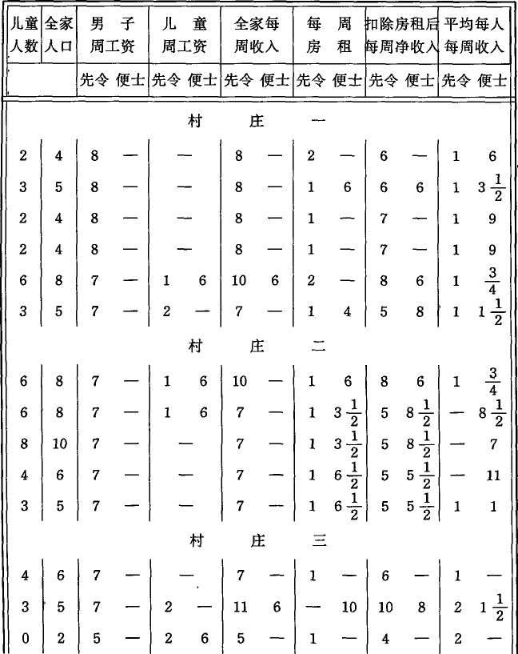
谷物法的废除大大推动了英格兰的农业。修建巨大规模的排水工程(107)，采用圈养牲畜和人工种植饲料的新方法，应用施肥机，采用处理粘土的新方法，更多地使用矿物质肥料，采用蒸汽机以及其他各种新式工作机等等，总之，耕作更加集约化就是这一时期的特点。皇家农业学会主席皮由兹先生断言，由于采用新机器，（相对的）经营费用几乎减少了一半。另一方面，从土地上得到的实际收益迅速增加了。每英亩土地投资的增加，因而租地农场的加速积聚，是采用新方法的基本条件。(108)同时，从1846年到1856年耕地面积约扩大了464119英亩，东部各郡原为养兔场和贫瘠牧场而现在变成了富饶的庄稼地的大片土地尚不计算在内。我们已经知道，从事农业的总人数与此同时却减少了。就拿男女两性各种年龄的真正农业工人来说，他们的人数从1851年的1241269人减少到1861年的1163217人。(109)因此，英国中央注册局局长有理由说：“1801年以来租地农场主和农业工人数目的增加，同农产品的增长是极不相称的。”(110)但是最近一个时期，这种不相称的情况更加严重了：一方面，耕地面积不断扩大，耕作更加集约化，投在土地及其耕作上的资本有了空前的积累，农产品获得了英格兰农业史上空前未有的增长，土地所有者的地租大大增加，资本主义租地农场主的财富日益膨胀；另一方面，农业工人人口却在绝对地减少。如果再加上城市销售市场的不断迅速扩大，自由贸易的占统治地位，那么，农业工人在经过种种不幸之后终于被安排在理应令人陶醉的幸福环境中了。
但是罗杰斯教授却得出这样的结论：今天的英格兰农业工人，不要说同他们14世纪下半叶和15世纪的先人相比，就是同他们1770年到1780年时期的先人相比，他们的状况也是极端恶化了，“他们又成了农奴”，而且是食宿都很坏的农奴。(111)朱利安·汉特医生在他关于农业工人的居住状况的划时代的报告中说：
“农仆〈这是农奴制时期对农业劳动者的称呼〉的生活费用固定在只够他活命的最低的数额上……他的工资和住房同从他身上榨取的利润相比，几乎不值一提。他在租地农场主的计算中是个零(112)……他的生存资料永远被看成是一个固定的量。”(113)“至于他的收入的任何进一步的减少，他会说：我什么也没有，我什么也不操心。他不担心将来，因为他除了生存所绝对必需的东西之外，一无所有。他降到了零点，也就是租地农场主计算的起点。由它去吧，幸福与不幸反正同他无关。”(114)
1863年，对被判处流放和从事强制性公共劳动的犯人的饮食状况和劳动状况曾进行过正式调查。调查的结果记载在两大本厚厚的蓝皮书中。其中写道：
“英格兰监狱中犯人的饮食同这个国家贫民习艺所中需要救济的贫民以及自由农业工人的饮食的详细对比，无可辩驳地表明，前者的饮食比后二者都要好得多。”(115)而“被判处从事强制性公共劳动的犯人的劳动量，大约只有普通农业工人的一半”(116)。[451]
下面略引几段颇为典型的证词。爱丁堡典狱官约翰·斯密斯在作证时说：
“英格兰监狱中的饮食比普通农业工人要好得多。”（第5056号）“苏格兰的普通农业工人很少吃到什么肉类，这是事实。”（第5057号）“你知道有什么理由能说明犯人的饮食必须比普通农业工人好得多吗？——确实不知道。”（第3047号）“你是否认为应当作进一步试验，使被判处从事强制性公共劳动的犯人的饮食和自由农业工人的饮食大致差不多呢？”（第3048号）(117)其中还写道：“农业工人会说：我干的活很重但是吃不饱。我在蹲监狱的时候，活没有这样重但是吃得很饱，因此我觉得释放出来还不如关在监狱里好。”(118)
综合该报告第一卷中所附的各种表格，可以得出如下比较表。
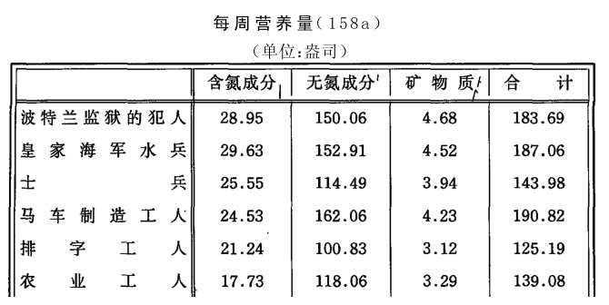
1863年医务调查委员会对国民中吃得较坏的各阶级的营养状况进行过一次调查，这次调查的一般结果读者已经知道了。(119)它表明，大部分农业工人家庭的饮食都低于“防止饥饿病”所必需的最低限度。特别在康沃尔、德文、萨默塞特、威尔特、斯塔福德、牛津、伯克斯和赫茨等地的所有纯农业区更是这样。斯密斯医生说：
“农业工人得到的营养比平均量多，因为他得到的食物比家庭其他成员多得多，这对他的劳动来说是必不可少的。在比较贫困的地区，几乎全部肉类或油脂都归他一个人了。他的妻子和正处在发育期的孩子们得到的营养量多半不够，主要是缺乏氮素，几乎所有的郡都是如此。”(120)
同租地农场主住在一起的男仆和婢女的营养倒很充足。他们的总数由1851年的288272人减少到1861年的204962人。斯密斯医生说：
“妇女参加田间劳动尽管有一些坏处，但在目前情况下对一个家庭来说还是大有好处，因为这样做可以给家庭增加一些钱用于买鞋子、衣服和支付房租，从而能使一家人吃得好些。”(121)
这次调查的最值得注意的结果之一，就是弄清了英格兰农业工人的营养比联合王国其他地区农业工人的营养要差得多。下表就是证明：
西蒙医生在官方的卫生报告中说：
“汉特医生报告的每一页都证明，我国农业工人的住宅数量不足而且质量很坏。多年来，他们在这方面的情况不断恶化。现在农业工人要找到栖身之所困难大得多了，即使找到了，也远不能适应他们的需要，这种情况也许比几世纪以来的任何时候都更糟。特别是最近二三十年来，这种祸害更迅速滋长了，目前村民的居住条件简直糟糕透了。村民在这方面束手无策，除非那些靠他们的劳动发财致富的人认为值得对他们发点善心。农业工人能不能在他耕种的土地上找到住处，那个地方适合于人住还是适合于猪住，同时是否附有一小块能够大大减轻贫困压力的园圃——这一切都不取决于他是否愿意或者有能力支付适当的房租，而是取决于别人怎样行使‘任意支配自己财产’的权利。不管租地面积有多大，也没有一项法律规定必须在上面建有一定数量的工人住宅，更不用说像样的住宅了；法律同样也没有给工人保留拥有土地的丝毫权利，虽然工人的劳动对土地来说就像雨露和阳光一样必不可少……还有一种大家都知道的情况更加深了工人的灾难……这就是济贫法关于居住和负担济贫税的规定所产生的影响。(122)在这项法律的影响下，各教区为了金钱上的利益都要把本教区居住的农业工人的人数限制在最低限度之内；因为不幸的是，农业劳动并不能保证劳苦的工人和他的一家维持永久可靠的独立地位，而多半不过是一条通向需要救济的赤贫的或长或短的迂回道路，在整个途程中工人离需要救济的赤贫是这样近，他只要一生病或者暂时失业，就不得不立刻求助于教区救济；因此，只要有农业人口在教区内定居下来，显然就会加重教区的济贫税负担……大地主们(123)只要决定不准在他们的领地上建筑工人住宅，他们对穷人的负担马上就可以减轻一半。那些可以‘任意支配自己财产’的地主，凭借绝对的土地所有权，竟能够像对待异邦人那样对待土地的耕种者并把他们从自己的庄园上赶出去。对于这样一种绝对的土地所有权，英国宪法和法律究竟准备在多大程度上予以承认，这个问题不属于本报告所讨论的范围……这种驱逐权不单是一种理论问题，它在实际上被广泛地行使着。这是对农业工人的居住条件有决定性影响的情况之一……这种灾祸殃及的范围，从最近一次人口调查中就可以看出。根据这次调查，在最近10年间，尽管地方上对房屋的需求增加了，但是英格兰的821个地区拆除的房屋却越来越多，以致撇开那些不得定居的人〈即不得在自己劳动的教区内定居的人〉不说，1861年居民人数虽然比1851年增加了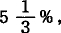但是他们居住的房屋却减少了汉特医生说，减少人口的过程一旦达到目的，就出现一种供人观赏的村庄，那里小屋所剩无几，除了牧羊人、园丁和看守狩猎场的人这些固定的仆役以外，谁也不准居住，只有他们才能从慈善的主人那里得到对他们这个阶级来说通常已算不坏的待遇。(124)但是土地需要耕种，于是我们看到，雇来种地的工人并不是地主的房客，而是也许从3英里外的开放村庄来的；这种开放村庄有大量小房主，他们在非开放村庄的工人的小屋被拆除以后就把这些人接纳下来。在那些正走向这种结局的地方，小屋大多破烂不堪，显示出它们注定要遭到的命运。这些小屋正处在自然倒塌的各个阶段。只要房顶还没有塌下来，就允许工人租用，而工人往往也非常乐意承租，即使他必须付出像样的住宅的租金。可是房子从不修理，从不改善，除非身无分文的住户自己动手收拾一下。当房屋终于完全不能住人时，只不过表示又多了一座拆毁的小屋和未来的济贫税将相应减少而已。当大地主这样把居民从他们控制的土地上赶走以摆脱济贫税时，附近的小乡镇或开放村庄就把这些被赶出来的工人接纳下来。我说的是附近，但是这个‘附近’也可能离工人每天做苦工的租地农场有3—4英里远。这样，工人为了挣得每天的面包，除了整天干活外，每天还必须走6—8英里路，而这好像不算一回事似的。现在，他的妻子和孩子们所从事的一切农活也要在同样困难的条件下来干了。然而住得远所引起的灾难还不止此。在开放村庄里，建筑投机家购买小块地皮，尽量密集地建造一些最简陋的小屋。在这些可怜的小屋里挤满了英格兰农业工人。这些小屋即使面临空旷的田野，也具有最坏的城市住宅的种种最可怖的特点(125)……另一方面，决不要以为，那些即使居住在他们耕种的土地上的工人能够找到一所同他们的生产劳动的生活相称的住宅。甚至在最阔绰的田庄，工人的小屋也往往是非常简陋的。有些地主认为，能让工人和他的家庭住上一间牲口棚已经很不错了，可是他们在出租这类房子时竟然恬不知耻地榨取尽可能多的房租。(126)这也许是一座破落的小屋，只有一间卧室，没有火炉，没有厕所，没有可以开关的窗户，除了水沟而外没有任何供水设备，没有园圃，但工人对这种不公正也无可奈何。而我们的卫生警察法仍然是一纸空文。这些法律竟然恰恰要靠出租这类破屋的地主们来实行……我们决不能让那些偶尔见到的灿烂夺目的景象迷住眼睛而看不见那些有辱英国文明的大量事实。尽管现在的居住情况已经糟到了骇人听闻的地步，但是权威的观察家们却一致得出结论说，住宅固然普遍恶劣不堪，但同住宅数量不足比较起来，那还是一个微不足道的灾难。这种状况真是太可怕了。多年来，农业工人居住过挤的状况不仅使关心健康的人深感不安，而且也使一切关心体面和有道德的生活的人深感不安。因为那些提出关于农村地区流行病蔓延情况报告的人一而再再而三地用一成不变的看来已成老套的词句指出，由于居住过挤，为制止已发生的流行病进一步蔓延而作的一切努力都白费了。报告同样一而再再而三地证明，农村生活本来对健康有许多好处，但是由于居民过于密集，不仅传染病蔓延大大加快，而且非传染性疾病也很容易发生。揭露这类情况的人对别的祸害也没有保持沉默。虽然他们原来的任务只限于保健工作，但是他们几乎总是不得不注意到问题的其他方面。他们在报告中指出，已婚的和未婚的成年男女常常挤住在一间狭小的屋子里，这必定使人相信，在这种情况下羞耻心和庄重感被最粗暴地伤害了，道德的败坏几乎是必然的(127)……例如，在我最近一次报告的附录里，载有奥德医生关于白金汉郡温地区突然发生热病的报告。他谈到一个从温格雷夫来的年青人怎样把热病带到了温。他在得病的最初几天和另外9个人同住在一个房间里。两个星期的工夫，房间里就有几个人被传染了。在几星期内，9人中有5人得了热病，并有一人死亡！同时，圣乔治医院的医生哈维曾因私人出诊的关系在传染病流行期间到过温，他也向我提供了类似的情况：一个患热病的年青女人晚上同父亲、母亲、她的私生子、两个小伙子即她的兄弟以及各有一个私生子的两个姊妹睡在一个房间里，一共是10个人。几星期以前这个房间曾住过13个儿童’。”(128)
汉特医生调查过5375户农业工人居住的小屋，其中不仅有纯农业区的，而且有英格兰所有各郡的。在5375户中，2195户只有一间卧室（往往兼作起居室），2930户有2间卧室，250户有2间卧室以上。现在我就12个郡的情况简单摘录如下。
1.贝德福德郡：
雷斯林沃思：卧室大约长12英尺、宽10英尺，还有许多比这更小。矮小的平房通常都用木板隔成两间卧室，在高5英尺6英寸的厨房里往往还放上一张床。房租3镑。住户要自己盖厕所，房东只提供一个土坑。谁家一盖了厕所，邻居们便都来使用。一个叫理查森的一家租的一栋房屋真是漂亮非凡。它的石灰墙鼓得像行屈膝礼的女人的长裙一样。山墙一边突出来，一边凹进去，而在凹进去的一边不幸还竖着一根烟囱，即一根用泥土和木头做的歪歪扭扭的管子，活像一个象鼻子。烟囱用一根长棍支着，防备它倒下来。门和窗都是菱形的。在调查过的17户人家中，只4户有卧室一间以上，不过也是挤得满满的。在一座只有一间卧室的小屋里，住着3个大人和3个孩子，另一户这样的小屋住着一对夫妇和6个孩子，如此等等。
邓顿：房租昂贵，4镑至5镑，男子每周工资10先令。他们都想靠家里人编草辫来挣钱付房租。房租越高，需要一起干活的人便越多，这样才能付得起房租。一间住着6个大人和4个孩子的卧室，房租是3镑10先令。邓顿最便宜的房屋外沿长15英尺，宽10英尺，租金3镑。在调查过的14户人家中，只有一户有两间卧室。村前不远有一户人家，住户就在墙脚下大小便，房门下端烂掉了9英寸。晚上关门的时候，人们巧妙地从里面塞上几块砖头，再挡上块破席子。半个窗户连玻璃带窗框全掉下来了。房子里没有任何家具，3个大人和5个小孩挤做一团。邓顿比起比格尔斯韦德联合教区的其他地方来，还不算是最坏的。
2.伯克郡：
比内姆：1864年6月，一间小平房住着丈夫、妻子和4个孩子。一个女儿在干活的地方得了猩红热回的家。她死了。一个孩子得病死去。汉特医生被请来的时候，母亲和一个孩子正患着伤寒病。父亲和另一个孩子睡在屋外边。但是，这里要保证隔离很难，因为在这个不幸的村庄的拥挤的市场上就堆放着传染病人家待洗的衣物。哈家的房租每周1先令，一间卧室里住着一对夫妇和6个孩子。另一座房子租金8便士（每周）；长14英尺6英寸，宽7英尺，厨房高6英尺；卧室没有窗户，没有火炉，没有门，除了一条过道外，没有任何其他出入口，也没有园圃。不久前，有一个男人同他的两个成年女儿和一个行将成年的儿子住在里边；父亲和儿子睡在一张床上，两个女儿睡在过道里。他家住在这里的时候，两个女儿各生过一个小孩，其中一个女儿是到贫民习艺所生了孩子以后回家来的。
3.白金汉郡：
在1000英亩土地上建有30户小屋，大约住着130—140人。布拉德纳姆教区占地1000英亩，1851年有36户人家，住着84个男人和54个女人。男女人数的不平衡到1861年有所改变，这时男子有98人，女子87人，10年间男子增加14人，女子增加33人。然而户数却减少了一户。
温斯洛：大部分房屋是按好式样新建的；房屋的需要量看来很大，因为非常蹩脚的小屋每周也要付1先令或1先令3便士的租金。
沃特-伊顿：这里的地主眼看居民增加了，却拆除了大约20%的房屋。有一个贫穷的工人上工时大约要走4英里路，有人问他能不能找到一座较近的小屋，他回答说：“不能，他们生怕招到像我这样有一大家人口的房客。”
温斯洛附近的廷克斯恩德：一间卧室长11英尺，宽9英尺，最高处6英尺5英寸，住着4个大人和5个孩子。另一间卧室长11英尺7英寸，宽9英尺，高5英尺10英寸，住着6个人。这两个家庭每个成员所占的空间比一个苦役犯人所应占的空间还要小。每座房屋只有一间卧室，没有后门，水非常缺乏。房租每周从1先令4便士到2先令。在调查过的16户人家中，只有一个人每周有10先令的收入。在这样的居住条件下，每个人得到的空气量相当于他整夜被关在4英尺立方的箱子里所得到的空气量。不过，那些旧的小屋倒有许多自然的通风口。
4.剑桥郡：
甘布林盖属于几个地主所有。这里到处都可以看到破烂不堪的小屋。许多人以编草辫为业。甘布林盖到处都是致命的疲惫，到处都绝望地屈服于肮脏生活。中心地区年久失修已经成为南北两端灾难加深的根源，在这两端房子正一座接一座地倒塌下去。另有住处的地主们对这些穷窝敲骨吸髓。房租贵极了；8—9个人硬挤在一间卧室里，有两处是6个大人各带着1—2个孩子挤在一间小小的卧室里。
5.埃塞克斯：
在本郡的许多教区，居民和小屋同时减少。但是至少有22个教区，房屋的拆除并没有阻止住居民的增加，或者说，没有引起那种到处发生的以“向城市移居”为名而进行的驱逐居民的现象。在面积为3443英亩的芬格林霍教区，1851年有房屋145座，到1861年只剩了110座，但是居民不愿意搬走，并且甚至在这样的条件下，人口还增加了。在拉姆斯登克莱斯教区，1851年252人住在61座房屋里，而到1861年，262人却挤在49座房屋里。在面积为1827英亩的巴西尔登教区，1851年157人住35座房屋，10年以后，180人却只住27座房屋。在总面积为8449英亩的芬格林霍、南芬布里奇、威德福德、巴西尔登和拉姆斯登克莱斯等教区，1851年1392人住316座房屋，到1861年，在同样大的面积上1473人却只住249座房屋。
6.赫里福德郡：
这个小郡受“驱逐风气”之苦比英格兰任何其他郡都更厉害。在马德利，小屋挤得满满的，这些小屋通常有两间卧室，多半为租地农场主所有。他们很容易按每年3镑或4镑的租金出租这些小屋，而他们每周支付的工资才9先令！
7.亨廷登郡：
哈特福德教区，1851年有房屋87座，此后不久，这个面积为1720英亩的小教区拆除了19座小屋；居民1831年452人，1851年382人，1861年341人。调查过的14户人家居住的小屋，都只有一间卧室。其中一户住着一对夫妇、3个成年儿子、1个成年姑娘、4个小孩，共计10人；另一户住着3个大人、6个小孩。有一个房间长12英尺10英寸，宽12英尺2英寸，高6英尺9英寸，住着8个人；连房内突出部分计算在内，平均每人占有的空间才将近130立方英尺。在这14间卧室内，共住着34个大人和33个小孩。这些小屋四周很少有小园圃，不过许多住户可以按每路得（英亩）10或12先令的租金租到一小块土地。这些地块离住宅很远。住宅没有厕所。全家人要么不得不到自己的地里去大便，要么像这里发生的那样——这简直很难说出口——拉在一个橱柜的抽屉里，满了以后，便拿到需要粪便的地方倒掉。在日本，生活条件的循环也要比这清洁些。
8.林肯郡：
兰托夫特：在莱特的一家中住着1个男人、他的妻子、岳母和5个孩子。这座房屋一进门有个厨房，还有个洗濯间，厨房顶上是卧室。厨房和卧室长12英尺2英寸，宽9英尺5英寸。房屋总面积长21英尺3英寸，宽9英尺5英寸。卧室是个小阁楼，四壁像宝塔糖一样越往上越收拢，正面开着一个天窗。他为什么要住在这里？因为有园圃吗？园圃小极了。因为房租吗？房租很贵，每周1先令3便士。因为离工作地点近吗？不，离工作地点有6英里远，他每天来回要走12英里路。他住在这里，只是因为这座小屋可以租到，并且他想找一座独门独户的小屋，而不管房子在什么地方，租价多高，好坏如何。下面是兰托夫特教区12户人家的统计资料，每户都只有一间卧室，共住着38个大人和36个小孩。
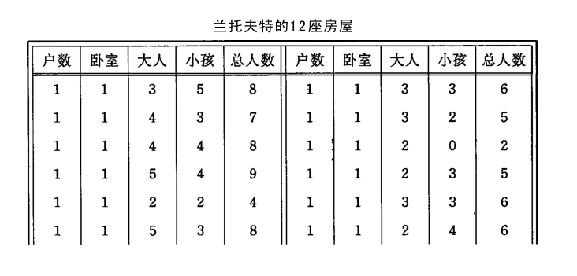
9.肯特郡：
肯宁顿，1859年居民拥挤到了极点，当时发生了白喉，教区医生对居民中较贫困阶级的状况进行了一次正式调查。他发现，在这个需要大量劳动的地方，好多小屋被拆除了，新的却没有建造。在一个地区有4座被称为鸟笼的小房子，每座有4个房间，其大小如下：
10.北安普敦郡：
布里克斯沃思、皮茨福德、弗洛尔：这3个村庄中，一到冬天就有20—30个人因为找不到工作流落街头。租地农民栽种的谷物和块根作物往往种得不够好，因此地主认为最好还是把他所有的租地合并成2—3片大地块。这样一来就造成了失业现象。地沟的一边是土地需要耕种，另一边是受欺诈的工人眼巴巴地望着土地。工人们夏天拼死拼活地劳动，而冬天却要忍饥挨饿，难怪工人们用他们自己的方言说：“the parson and gentlefolks seem frit to death at them。(129)
弗洛尔村有好几家这样的例子：一间极其狭窄的卧室住着一对夫妇和4、5或6个孩子，或者是住着3个大人和5个孩子，或者是住着一对夫妇、祖父和6个患猩红热的孩子，如此等等。有两座各有两间卧室的房子，住着两户人家，分别有8个大人和9个大人。
11.威尔特郡：
斯特拉顿：调查过31户人家，其中8户都只有一间卧室。在这个教区的彭希尔地方，有一座小屋，每周租金1先令3便士，住着4个大人和4个孩子，除了还算像样的墙壁之外，从粗糙的碎石铺成的地面到腐烂的茅草屋顶，没有一处好地方。
12.伍斯特郡：
这里拆除房屋的现象并不那么严重，但是从1851年到1861年，每座房屋容纳的人数平均由4.2人增加到4.6人。
巴德西：这里有许多小屋和小园圃。有些租地农场主说，小屋“是个大祸害，因为它招引穷人”。一个绅士说：
“穷人不会因此得到什么好处；即使再修建500座小屋，也会像面包一样被一抢而光；事实上，修建得越多，需要量也就越大”——
照他看来，房屋产生住户，而住户又按照自然规律对“住房”产生压力。汉特医生在回答这种说法时指出：
“但是这些穷人必然是来自某个地方。既然巴德西不存在救济之类的特别吸引力，那必然是在另一个更不合适的地方存在着某种把他们赶到这儿来的排斥力。如果每个人都能在自己的劳动地点附近找到一座小屋和一小块土地，那他当然宁愿住在这种地方而不会搬到巴德西来了，因为在这里，他租一小块土地的租金比租地农场主所付的租金贵一倍。”
人口不断地流往城市，农村人口由于租地集中、耕地转化为牧场、采用机器等原因而不断地“变得过剩”，农村人口因小屋拆除而不断地被驱逐，这些现象是同时发生的。一个地区的人口越稀少，那里的“相对过剩人口”就越多，他们对就业手段的压力就越大，农村人口多于住房的绝对过剩也就越大，从而农村中地方性的人口过剩以及最容易传染疾病的人口拥挤现象也就越严重。人群密集在分散的小村庄和小市镇的现象，同人们被强行从地面上赶走是相适应的。尽管农业工人的人数不断减少，他们的产品的数量不断增加，但他们还是不断地“变得过剩”，这是使他们成为需要救济的贫民的摇篮。他们可能成为需要救济的贫民，是他们被驱逐的一个原因，也是居住条件恶劣的主要根源，而居住条件恶劣又摧毁了他们最后的反抗能力，使他们完全变成地主(130)和租地农场主的奴隶，以致获得最低的工资对他们来说已成了天经地义。另一方面，农村中尽管经常出现“相对过剩人口”，但同时也感到人手不足。这种现象不仅局部地发生在人口过快地流往城市、矿山、铁路工地等处的地区，而且在收获季节以及在春夏两季，当英国的精耕细作的、集约化的农业需要额外劳力的许多时候，到处都可以看到。农业工人按耕作的平均需要来说总是过多，而按特殊的或者临时的需要来说又总是过少。(131)因此，在官方的文件中可以看到同一地区同时发出的自相矛盾的抱怨，既抱怨劳力不足，又抱怨劳力过剩。临时性的或局部的劳力不足并不会引起工资的提高，只会迫使妇女和儿童也参加田间劳动，使工人的年龄不断下降。一旦妇女和儿童被大规模地使用，这又会反过来成为一种新的手段，造成农业中男工过剩，并使他们的工资下降。这种恶性循环的美好结果之一是所谓的帮伙制度(132)，这种制度在英格兰东部地区正在兴盛起来。下面我简单地谈谈这种制度。(133)
帮伙制度几乎是林肯、亨廷登、剑桥、诺福克、萨福克和诺丁汉等郡所独有的，在邻近的北安普敦、贝德福德和拉特兰各郡的个别地方也可以见到。我们且举林肯郡为例。这个郡的很大一部分是新地，原来是沼泽，或者像上述东部其他各郡的一些地方一样，是刚从海水下夺来的土地。蒸汽机在排水方面创造了奇迹。过去的沼泽地和沙地现在已成了一片富饶的米粮川，可以得到最高的地租。阿克斯霍姆岛及特伦特河沿岸其他教区人工开拓的冲积地也是如此。新的租地农场出现了，然而不但没有相应地修建新的小屋，连旧的小屋也拆毁了，劳力供给来自几英里以外的、分布在蜿蜒于丘陵之间的大道两旁的开放村庄。从前居民只是为了躲避漫长的冬季水患才到那里居住。在400—1000英亩的租地农场上长期住着一些工人（他们在当地被称为定居工人），他们专门干经常性的使用马匹的繁重农活。每100英亩（1英亩＝40.49公亩或1.584普鲁士亩）土地平均还摊不到一座小屋。例如，一个租种沼泽地的租地农场主对童工调查委员会说：
“我的租地占地320多英亩，全是耕地。没有小屋。有一个工人现在住在我这里。我有4个养马工，住在农场附近。需要大量人手的轻活都找帮伙去做。”(134)
田间有许多轻活，如除草、松土、施肥、拣石子等等。所有这些活都由住在开放村庄的帮伙，即一群有组织的人来干。
每个帮伙由10人至40或50人组成，有妇女、男女青少年（13—18岁，不过少年们大多一到13岁就离开帮伙）和男女儿童（6—13岁）。为首的是帮头，他通常是一个普通农业工人，多半是所谓的坏蛋，无赖汉，飘泊不定，好酗酒，但是有一定的干劲和才干。他招募帮伙，帮伙在他指挥下干活，而不是在租地农场主指挥下干活。他多半从租地农场主那里按活茬包揽农活，他的收入平均起来不会比一个普通农业工人的收入高出许多(135)，这种收入几乎完全要看他有多大本领能在最短时间内使他的那伙人付出最大量的劳动。租地农场主们发现，妇女只有在男子的专制下才能好好地干活，而妇女和儿童一干起活来，正像傅立叶已经知道的那样，就会拼命地使出自己的全身力气，可是成年男工却很滑头，总是尽量节省力气。帮头带着人从一个庄园到另一个庄园，一年中能使他的帮伙干6—8个月的活。因此对工人家庭来说，同他打交道要比同只是偶尔雇用孩子的租地农场主打交道有利和可靠得多。这种情形大大地巩固了帮头在开放村庄中的权势，以致孩子们多半只有经过他的介绍才能找到工作。从帮伙中抽出个别儿童向外出租，成了他的副业。
这种制度的“阴暗面”，就是儿童和青少年要从事过度劳动，他们每天要到5、6英里有时甚至7英里以外的庄园去劳动，往返时要长途跋涉，最后，“帮伙”内道德败坏。虽然帮头（在某些地区被称为“赶牲口的人”）备有一根长棍子，但是他很少用它打人，极少听到有谁抱怨他虐待人。他是一个民主的皇帝，或者有些像哈默尔恩的捕鼠者。因此，他需要在自己的臣民中树立威望，他用那种在他的庇护下风行一时的茨冈式的生活把他的臣民笼络住。粗野的放纵，漫无节制的寻欢作乐和极端伤风败俗的猥亵行为，使帮伙具有巨大的魔力。帮头常常在下流酒馆里畅饮到囊空如洗，然后酣醉而归，左右各由一个慓悍的女人搀扶着，走在行列的前头，儿童和青少年跟在后面乱嚷乱叫，唱着嘲讽轻浮的歌曲。在回家的路上，傅立叶所说的“男女公开”[453]成了习以为常的事。十三四岁的女孩因她们的年龄相仿的男伙伴而怀孕的现象屡见不鲜。帮伙所在的开放村庄变成了所多玛和蛾摩拉(136)[454]，这些地方的非婚生子比王国的其他地方要多一倍。受这种环境薰陶的姑娘出嫁以后，在道德上会落到怎样的结果，我们在前面已经指出(137)。她们的子女即使不被鸦片毁掉，也是帮伙的天生的新兵。
上面所说的是帮伙的典型形式，这种帮伙称为公开的，公共的或流动的帮伙。此外，还有私人帮伙。私人帮伙的组成同普通帮伙一样，但人数较少，这种帮伙不是在帮头手下干活，而是在一个租地农场主不知如何使用才好的老雇农手下干活。这里没有茨冈式的放荡不羁的生活，但是各种证词表明，儿童的报酬和待遇变坏了。
最近几年来不断扩大的帮伙制度(138)当然不是为了帮头的利益而存在的。它是为了大租地农场主(139)或地主(140)的发财致富的需要而存在的。在租地农场主看来，再没有更巧妙的办法能把他的劳动人员大大压低到正常水平以下，而又能经常拥有一批额外劳力来应付额外工作，花尽量少的钱榨取尽量多的劳动(141)，并使成年男工“过剩”。根据以上所述，我们可以了解，为什么人们一方面承认农民处于不同程度的失业中，而另一方面又认为，由于男劳力缺乏并流往城市，帮伙制度是“必要的”。(142)林肯郡等地的已清除杂草的田地和人类的杂草，就是资本主义生产的对立的两极。(143)
（f）爱尔兰[455]